نيوترينوات عالية الطاقة من توهجات الأشعة السينية في البلازارات التي يتم رصدها بشكل متكرر بواسطة تلسكوب الأشعة السينية Swift
الملخص
وقد تم اقتراح توهجات بلازار على أنها المرشحين المثاليين لتعزيز إنتاج النيوترينو. في حين أن إشارة النيوترينو الصادرة عن توهجات الأشعة السينية تمت مناقشتها على نطاق واسع، إلا أن إنتاج النيوترينو من توهجات الأشعة السينية قد حظي باهتمام أقل. هنا، نحن حساب إشارة النيوترينو المتوقعة من توهجات الأشعة السينية المكتشفة في 66 من البلازارات التي تم رصدها أكثر من 50 مرة باستخدام تلسكوب الأشعة السينية (XRT) الموجود على متن مرصد Neil Gehrels Swift. نحن نفكر في سيناريو يتم فيه تشغيل توهجات الأشعة السينية بواسطة إشعاع السنكروترون من البروتونات النسبية، ويتم إنتاج النيوترينوات من خلال تفاعلات الفوتوميسون بين البروتونات مع فوتونات الأشعة السينية السنكروترونية الخاصة بها. باستخدام منحنيات ضوء الأشعة السينية 1 keV لتحديد التوهج، وتدفق 0.5-10 keV لكل توهج كبديل لتدفق النيوترينو بجميع النكهات، والمساحة الفعالة لمصدر نقطي IceCube لتكوينات الكاشف المختلفة، قمنا بحساب عدد نيوترينوات الميون ومضادات نيوترينوات الميون فوق 100 TeV المتوقع لـ IceCube من كل مصدر متوهج. ينشأ الجزء الأكبر من أحداث النيوترينو من العينة من التوهجات ذات الفترات d. وبحساب دورة عمل توهج الأشعة السينية للمصادر في العينة، والتي تتراوح بين و24 في المائة، فإننا نحسب متوسط معدل النيوترينو السنوي لكل مصدر. متوسط التوزيع (باللوغاريتم) هو yr-1، مع وجود Mkn 421 بأعلى معدل متوقع yr-1، متبوعًا بـ 3C 273 ( yr-1) وPG 1553+113 ( yr-1). يمكن لكاشفات النيوترينو من الجيل التالي، جنبًا إلى جنب مع المراقبة المنتظمة بالأشعة السينية للبلازارات، أن تقيد دورة عمل توهجات الأشعة السينية الهادرونية.
keywords:
المجرات: النشطة – النيوترينوات – آليات الإشعاع: غير الحرارية – الأشعة السينية: المجرات1 مقدمة
البلازارات هي فئة فرعية من النوى المجرية النشطة (AGN) مع نفاثات نسبية تتماشى بشكل وثيق مع خط رؤيتنا (على سبيل المثال Urry and Padovani, 1995) والتي يتم تشغيلها عن طريق التراكم على ثقب أسود مركزي فائق الكتلة (على سبيل المثال Begelman et al., 1984). إنها أقوى المصادر الفيزيائية الفلكية المستمرة للإشعاع الكهرومغناطيسي غير الحراري في الكون، مع توزيعات الطاقة الطيفية (SEDs) التي تمتد عبر عقود في الطاقة، بدءًا من الترددات الراديوية وحتى أشعة عالية الطاقة (لمراجعة حديثة عن AGN، انظر Padovani et al., 2017). يتميز بلازار SED بمظهر مميز مزدوج الحدبة (في مساحة ) مع مكون الطاقة المنخفضة الذي يصل إلى ذروته بين طاقات الأشعة تحت الحمراء والأشعة السينية ومكون الطاقة العالية الذي يصل إلى ذروته في -rays (على سبيل المثال Ulrich et al., 1997; Fossati et al., 1998). تُعزى الحدبة منخفضة الطاقة عمومًا إلى إشعاع السنكروترون المنتج في منطقة موضعية من النفث (المعروف أيضًا باسم النقطة) بواسطة مجموعة من الإلكترونات النسبية. ومع ذلك، فإن أصل المكون عالي الطاقة أقل وضوحًا، مع طرح سيناريوهين بديلين لتفسيره. في السيناريوهات اللبتونية، يتم إنتاج الفوتونات عالية الطاقة عبر تشتت كومبتون العكسي بين الإلكترونات النسبية في النفاثات وفوتونات السنكروترون الخاصة بها ((السنكروترون الذاتي كومبتون، انظر على سبيل المثال. Maraschi et al., 1992; Bloom and Marscher, 1996; Mastichiadis and Kirk, 1997)) أو مجالات الإشعاع الخارجي منخفضة الطاقة ((كومبتون الخارجي، انظر على سبيل المثال. Dermer et al., 1992; Sikora et al., 1994; Ghisellini and Madau, 1996)). في السيناريوهات الهادرونية، يتم تفسير انبعاث الطاقة العالية إما عن طريق إشعاع السنكروترون للبروتونات النسبية (Aharonian, 2000; Mücke and Protheroe, 2001) أو عن طريق عمليات السنكروترون (أو كومبتون العكسي) للإلكترونات الثانوية والبوزيترونات المنتجة من تفاعلات البروتون والفوتون وإنتاج زوج الفوتون والفوتون في النفاثة (على سبيل المثال Mannheim et al., 1991; Stecker et al., 1991; Mannheim, 1993; Mücke et al., 2003). تتنبأ الفئة الأخيرة من النماذج أيضًا بالميونات عالية الطاقة ونيوترينوات الإلكترون من اضمحلال البيونات المشحونة الناتجة عن تفاعلات الفوتوميسون. ومن ثم، فإن اكتشاف النيوترينوات عالية الطاقة من البلازارات الفردية سيكون بمثابة الدليل القاطع على النفاثات المحملة بالباريون التي تعمل كمسرعات للأشعة الكونية.
في 2013 اكتشف تلسكوب آيس كيوب نيوترينو تدفقًا منتشرًا للنيوترينوات الفيزيائية الفلكية عند طاقات تتجاوز بضع عشرات من التيرا إلكترون فولت ((Aartsen and others, 2013b, a)). إن غياب تباين كبير يتوافق مع غالبية ( في المائة) من إشارة النيوترينو القادمة من مصادر خارج المجرة (على سبيل المثال Aartsen et al., 2017b, 2019a). تم اقتراح مجموعات فيزيائية فلكية مختلفة لشرح التدفق المنتشر الذي لاحظه IceCube (لمراجعة حديثة، انظر Mészáros, 2017). على الرغم من أن هوية المصادر التي تنتج التدفق المنتشر لا تزال مجهولة إلى حد كبير، فقد تم بالفعل وضع قيود قوية على فئات محددة بسبب عدم وجود ارتباطات بين النيوترينوات عالية الطاقة والمصادر المعروفة أو عدم وجود تجمعات كبيرة في أحداث النيوترينو عالية الطاقة (على سبيل المثال Murase and Waxman, 2016; Aartsen et al., 2017a; Yuan et al., 2020). يمكن أن تؤدي عمليات البحث عن الظواهر الكهرومغناطيسية العابرة، مثل التوهجات البلازارية، إلى تحسين ارتباط النيوترينوات بمصادر النقاط الفيزيائية الفلكية، حيث يمكن استخدام كل من وقت الوصول واتجاه الأحداث المكتشفة، في حين أن المساهمة من خلفية الغلاف الجوي يمكن أن تكون أصغر بكثير من الإشارة.11 1 يمكن كشف المصادر المتوهجة الساطعة في النيوترينوات بغض النظر عن مساهمة جماعة البلازارات في سماء النيوترينوات خارج المجرية (مثلًا Murase and Waxman, 2016; Guépin and Kotera, 2017; Murase et al., 2018).. أدى هذا النهج متعدد المراسلات إلى أول ارتباط في الزمان والمكان لحدث نيوترينو عالي الطاقة، IceCube-170922A، مع ضوء متوهج TXS 0506+056 (على مستوى ) (IceCube Collaboration et al., 2018). كشف بحث أرشيفي للمتابعة لأكثر من 9 من بيانات IceCube عن وجود فائض في النيوترينوات عالية الطاقة فيما يتعلق بخلفية الغلاف الجوي على مدار فترة أشهر في 2014-2015. قدمت هذه النتيجة دليل على انبعاث النيوترينو من اتجاه TXS 0506+056 (IceCube Collaboration, 2018). والجدير بالذكر أنه خلال ذلك الوقت لم يكن المصدر يشتعل عند أي طول موجي (من الراديو حتى أشعة GeV ) (IceCube Collaboration, 2018; Garrappa et al., 2019). من الناحية النظرية، بافتراض السيناريو الهادروني، تعتبر فترات نشاط التوهج مثالية لتعزيز إشارة النيوترينو المتوقعة، طالما يتم إنتاج كلا المرسلين (الفوتونات والنيوترينوات) في نفس الموقع. عادةً ما يشير التدفق الكهرومغناطيسي المتزايد أثناء التوهجات إلى أن كثافة الفوتونات المستخدمة كأهداف لتفاعلات الفوتوميسون مع البروتونات النسبية في النفاثات البلازارية تكون أعلى و/أو يتم تعزيز معدل حقن البروتونات المتسارعة. ونتيجة لذلك، تتوقع العديد من النماذج أن لمعان النيوترينو بجميع نكهاته، ، يتعزز بقوة أثناء التوهجات، مع ، حيث هو لمعان الفوتون في بعض نطاقات الطاقة و (على سبيل المثال Murase et al., 2014; Tavecchio et al., 2014; Petropoulou et al., 2016; Murase et al., 2018).
كان لتلسكوب المساحة الكبيرة (LAT) الموجود على متن تلسكوب Fermi الفضائي لأشعة غاما (Atwood et al., 2009) دورًا فعالًا في عمليات البحث عن نظيرات الأشعة الكهرومغناطيسية لنيوترينوات IceCube عالية الطاقة (على سبيل المثال Brown et al., 2015; Padovani et al., 2016; Palladino and Vissani, 2017; Murase et al., 2018; Giommi et al., 2020; Smith et al., 2021). مع فترة تشغيل لمدة عام، أنتجت Fermi-LAT عينة كبيرة من منحنيات منحنيات ضوء أشعة طويلة المدى مع أخذ عينات منتظمة تتيح أيضًا إجراء دراسات الارتباط بين توهجات أشعة والنيوترينوات عالية الطاقة (Oikonomou et al., 2019; Yoshida et al., 2019; Franckowiak et al., 2020). ومع ذلك، فإن إمكانية اكتشاف عمليات البحث هذه تعتمد بشدة على العتامة الجوهرية للمصدر في إنتاج زوج عند طاقات GeV. من الممكن أن تكون المصادر المظلمة لأشعة GeV عبارة عن بواعث نيوترينو ساطعة (على سبيل المثال Murase et al., 2016)، ولكن سيتم تفويتها بواسطة عمليات بحث Fermi-LAT. على سبيل المثال، فإن الافتقار إلى نشاط التوهج في أشعة GeV خلال فترة فائض النيوترينو في TXS 0506+056 (IceCube Collaboration, 2018) - على افتراض أن النيوترينوات المكتشفة هي حقًا من أصل فيزيائي فلكي - يشير إلى توهين فوتونات متعددة GeV على الفوتونات منخفضة الطاقة (على سبيل المثال Reimer et al., 2019; Rodrigues et al., 2019; Petropoulou et al., 2020) أو المناطق المنفصلة لإنتاج GeV فوتون ونيوترينو PeV (على سبيل المثال Xue et al., 2019; Zhang et al., 2020). بدافع من احتمال أن النيوترينوات عالية الطاقة لا ترتبط دائمًا بتوهجات الأشعة ، قدمت Mastichiadis and Petropoulou (2021) سيناريو بديلًا يربط بين توهجات الأشعة السينية ونيوترينوات TeV-PeV. في نموذجهم، تحدث توهجات الأشعة السينية عندما يتم تسريع البروتونات بشكل متقطع إلى طاقات عالية كافية في النفاثات البلزارية، وتنتج بيونات تتفاعل بشكل رئيسي مع إشعاع البروتون السنكروتروني. سبب التركيز على توهجات الأشعة السينية ذو شقين: فوتونات الأشعة السينية هي أهداف نشطة للتفاعلات الضوئية، وبالتالي تقلل طاقة البروتون المطلوبة لإنتاج البيون، وفي الوقت نفسه، يمكن أن تكون وفيرة مما يوفر سمكًا بصريًا كبيرًا للتفاعلات. والجدير بالذكر أن تدفق الأشعة السينية للتوهجات الهادرونية المقترحة يعد وكيلًا جيدًا لتدفق النيوترينو بجميع النكهات، في حين أن بعض توهجات الأشعة السينية الغنية بالنيوترينو قد تكون داكنة في أشعة GeV-TeV .
في هذا العمل، نقدم تنبؤات كمية للنيوترينو لسيناريو توهج الأشعة السينية الهادرونية في البلازارات. قمنا بحساب عدد نيوترينوات الميون ومضادات نيوترينوات الميونات فوق 100 TeV المتوقعة لـ IceCube من توهجات الأشعة السينية في البلازارات التي تمت ملاحظتها أكثر من 50 باستخدام تلسكوب الأشعة السينية (XRT، Burrows et al. 2005) على متن مرصد Neil Gehrels Swift بين نوفمبر 2004 ونوفمبر 2020 (Giommi et al., 2021). ولتحقيق هذه الغاية، قمنا بتطبيق خوارزمية الكتل البايزية على منحنيات الضوء 1 keV XRT لهذه البلازارات المرصودة بشكل متكرر لتوصيف الاختلافات ذات الدلالة الإحصائية وتحديد التوهجات. باستخدام طيف الأشعة السينية المعلومات في نطاق الطاقة 0.5-10 كيلو إلكترون فولت، ومدة كل كتلة متوهجة كبديل لمدة التوهج، نقوم بحساب تأثر النيوترينو بجميع النكهات لكل توهج. وباعتماد المساحة الفعالة للمصدر النقطي لـ IceCube، قمنا بحساب العدد المتوقع لنيوترينوات الميون والمضاد الميون لكل توهج من كل مصدر. على حد علمنا، هذه هي المرة الأولى التي يتم فيها استخدام بيانات Swift/XRT لهذا الغرض. هذه الورقة منظمة على النحو التالي. في القسم 2، نلخص النموذج النظري، مع تسليط الضوء على المكونات اللازمة لتقدير أحداث النيوترينو من توهجات الأشعة السينية. نقدم في القسم 3 مجموعة البيانات والطرق المستخدمة للبحث عن توهجات الأشعة السينية. في القسم 4 نقدم طريقتنا لحساب العدد المتوقع لأحداث نيوترينو الميون والمضاد الميون من توهجات الأشعة السينية. نواصل عرض نتائجنا في القسم 5. نختتم بملخص ومناقشة النتائج التي توصلنا إليها في القسم 6.
2 النموذج النظري
الافتراض الأساسي لنموذجنا هو أن كل الأشعة السينية تتوهج يتم إنتاجه بواسطة إشعاع السنكروترون لمجموعة الهادرونات (البروتونات) التي يتم تسريعها بشكل متقطع في طائرة البلازار. لا ينشأ بالضرورة انبعاث الأشعة السينية غير المتوهجة من المصدر من نفس منطقة التوهجات. في السيناريو الخاص بنا نفترض أنه يعزى إلى العمليات الإشعاعية للإلكترونات المتسارعة في النفاثات البلورية ولن يتم مناقشتها أكثر. عند التسارع إلى الطاقات النسبية، من المفترض أن يتم حقن البروتونات في منطقة حيث تفقد الطاقة عبر العمليات الإشعاعية، بما في ذلك إشعاع السنكروترون وتفاعلات الفوتوميسون. على وجه الخصوص، تؤدي تفاعلات البروتونات الضوئية مع فوتونات السنكروترون الخاصة بها إلى إنتاج توهج نيوترينو عالي الطاقة في وقت واحد. من ذروة تردد طيف توهج الأشعة السينية، يمكننا استنتاج الحد الأدنى من طاقة البروتون اللازمة لإنتاج النيوترينوات من خلال تفاعلات الفوتوميسون مع فوتونات السنكروترون البروتونية. بالإضافة إلى ذلك، قمنا بربط تدفق توهج الأشعة السينية بالنيوترينو متعدد النكهات وتدفق النيوترينو المضاد من خلال معلمة قياس ذات دوافع نظرية . تم عرض الحسابات الرقمية التفصيلية لأطياف الفوتون عريض النطاق وانبعاث النيوترينو المرتبط به في السيناريو المقترح لتوهجات الأشعة السينية في Mastichiadis and Petropoulou (2021). وللاكتمال، نناقش بإيجاز مكونات النموذج الضرورية أيضًا لهذا العمل. البروتونات النسبية مع عامل لورنتز في وجود مجال مغناطيسي بقوة تشع فوتونات السنكروترون ذات الطاقة المرصودة المميزة . من الآن فصاعدا، يتم قياس الكميات الأولية في الإطار المتبقي لمنطقة الانبعاث، في حين تتوافق الكميات غير الأولية مع القياسات الموجودة في إطار المراقب. يمكن كتابة عامل بروتون لورنتز على النحو التالي
| (1) |
حيث هو عامل دوبلر الذي يتوافق مع الحركة النسبية لمنطقة الإرسال، و هو الانزياح نحو الأحمر للمصدر، و والرمز بوحدات cgs، ما لم يُنص على خلاف ذلك.
البروتونات مع عوامل لورنتز المعطاة بالمعادلة (1) ستنتج نيوترينوات إذا تجاوزت عتبة الطاقة لتفاعلات الفوتوميسون مع فوتونات السنكروترون ذات الطاقة . وهذا يترجم إلى الحد الأدنى من عامل بروتون لورنتز المعطى بواسطة
| (2) |
بشرط أن ، فإن طاقة النيوترينوات التي تنتجها البروتونات التي تشع فوتونات السنكروترون ذات الطاقة هي
حيث استخدمنا المعادلة (1).
بتجاهل إنتاج زوج بيته-هايتلر كعملية تبريد للبروتونات، يمكن كتابة نسبة سطوع النيوترينو إلى الفوتون على النحو التالي:
| (4) |
حيث و هما لمعان النيوترينو والفوتون البوليمري. نركز هنا على سيناريو "الغني بالنيوترينو" حيث يكون معدل فقدان طاقة الفوتوميسون مشابهًا لمعدل فقدان الطاقة بسبب إشعاع البروتون السنكروتروني (لمزيد من التفاصيل انظر Mastichiadis and Petropoulou, 2021). في هذه الحالة، تسفر المعادلة (4).
| (5) |
أظهرت الحسابات العددية التفصيلية لتوهجات الأشعة السينية التي تعمل بالبروتون السنكروتروني أن المعادلة (5) هي في الواقع وكيل جيد لمعان النيوترينو بالقرب من وقت الذروة لتوهج الأشعة السينية. إذا استبدلنا لمعان الفوتون البوليمري بضياء الأشعة السينية keV للتوهج، تصبح المعادلة (5) مع . نحن نصمم النيوترينو التفاضلي بالإضافة إلى تدفق الطاقة المضادة للنيوترينو لجميع النكهات
| (6) |
حيث المعلمات التي سيتم تحديدها هي (الطاقة المميزة)، (المنحدر الطيفي)، و (التطبيع). تظهر الحسابات الرقمية المقدمة في Mastichiadis and Petropoulou (2021) أن المنحدر لا يتغير كثيرًا أثناء التوهج بمتوسط قيمة . هذه هي القيمة التي سنعتمدها في حساباتنا. تم العثور على طاقة النيوترينو المميزة من المعادلة (2) مع المقابلة لذروة طاقة طيف التوهج ()22 2 لا ينبغي الخلط بين هذا وبين طاقة الذروة لمكون الطاقة المنخفضة في SED .، والتي يمكن من حيث المبدأ أن تتغير أثناء التوهج. يمكننا حساب عامل التطبيع باستخدام العلاقة التالية
| (7) |
حيث 33 3 في الواقع، يتم تحديد ذلك من خلال الحد الأدنى من طاقة البروتونات المتفاعلة مع فوتونات السنكروترون الخاصة بها. نظرًا لأن و، فإننا نستخدم . و و keV و keV و هو تدفق طاقة الفوتون التفاضلي في الأشعة السينية. إذا كان من الممكن وصف الأخير بقانون القوة مع دليل الفوتونات بين و في الوقت ، أي
| (8) |
يمكن التعبير عن عامل التطبيع لتدفق النيوترينو، ، كـ
| (9) |
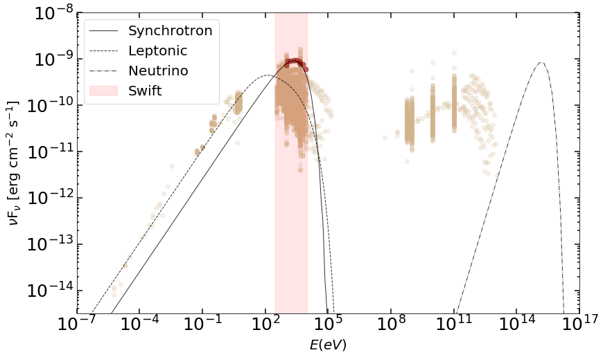
يظهر نموذجنا بشكل تخطيطي في الشكل 1. نقدم طيف السنكروترون البروتوني وطيف النيوترينو متعدد النكهات (انظر المعادلة 6) من توهج الأشعة السينية لـ Mkn 421. في نموذجنا، يُفترض أن إشعاع السنكروترون البروتوني يعمل على تشغيل حالات الأشعة السينية المتوهجة للمصدر، في حين أن العمليات الأخرى، مثل السنكروترون الإلكتروني أو تشتت كومبتون العكسي للفوتونات منخفضة الطاقة، هي المسؤولة عن انبعاث الأشعة السينية غير المتوهجة. يظهر هذا المكون الليبتوني بشكل تخطيطي بالخط المنقط. لا تظهر هنا مكونات الانبعاث الإضافية المصاحبة لتوهج الأشعة السينية (من عمليات photopair وphotopion) (للحصول على معالجة كاملة للانبعاث متعدد الأطوال الموجية، انظر Mastichiadis and Petropoulou, 2021).
3 منحنيات ضوء الأشعة السينية
نحن نستخدم البيانات من تلسكوب الأشعة السينية (XRT، Burrows et al. 2005) الموجود على متن مرصد Neil Gehrels Swift الذي تم الحصول عليه بين نوفمبر 2004 ونوفمبر 2020. تتكون عينتنا من جميع البلازارات التي تمت ملاحظتها على الأقل مرات 50 في هذه الفترة باستخدام Swift، (انظر الجدول 2). يصل هذا إلى 66 منها 26 عبارة عن كائنات ذات ذروة سنكروترون عالية (HSPs)، و15 عبارة عن مصادر ذات ذروة سنكروترونية متوسطة (ISPs)، و25 عبارة عن أجسام ذات ذروة سنكروترون منخفضة (LSPs). الكائنات44 4 تنقسم البلازارات إلى فئات طيفية اعتمادًا على طاقة الذروة للحدبة منخفضة الطاقة (السينكروترون) () إلى LSPs مع eV، ومقدمي خدمات الإنترنت مع eV، وHSPs مع eV (Padovani and Giommi, 1995; Abdo et al., 2010a).. نحن نستبعد مصادر 3 من تحليلنا (أي 1RXS J154439.4-112820، و3HSP J022539.1-190035، و2E 1823.3+5649). على سبيل المثال، تمت الإشارة إلى 1RXS J154439.4-112820 مرات 55 بواسطة Swift، ولكن يمكن استخدام ملاحظات 45 فقط لتحليل الأشعة السينية. الأسباب النموذجية لاستبعاد الملاحظة هي التعرضات القصيرة جدًا ( s) أو معدل العد المنخفض (على سبيل المثال، يتم استخدام وضع قراءة وقت النافذة عندما يكون معدل العد المصدر أقل من 0.5 c/s، مما يجعل التحليل الطيفي غير موثوق به). حالة 3HSP J022539.1-190035 مختلفة؛ ولم يكن هذا المصدر هو هدف ملاحظات Swift، بل كذب في مجال رؤية GRB 091127، والذي تمت ملاحظته عدة مرات خلال فترة زمنية قصيرة. بعض هذه المصادر (TXS 0506+056, 1ES 0229+200 /3HSP J023248.5+20171 و PKS 1502+106/5BZQ J1504+1029) تم تحديدها أيضًا على أنها نظيرات محتملة لمسارات IceCube عالية الطاقة (على سبيل المثال Kadler et al., 2016; IceCube Collaboration, 2018; Garrappa et al., 2019; Franckowiak et al., 2020; Giommi et al., 2020). للبحث عن تقلبية الأشعة السينية، نستخدم منحنيات ضوء الأشعة السينية 1 keV كما تم الحصول عليها بواسطة Giommi et al. (2021). تعتمد منتجات بيانات Swift/XRT على المسار والإجراءات والمنهجية التي تم تطويرها لمشروع Open Universe for Blazars (Giommi et al., 2018, 2019). هنا، نقدم مخططًا موجزًا لإجراء التحليل، ولكن للحصول على وصف شامل نحيل القارئ إلى Giommi et al. (2021). تم استخراج مصدر الأشعة السينية وأحداث الخلفية من بيانات XRT. بالنسبة لمجموعات البيانات ذات الأعداد الكافية (أي ) تم إجراء تركيب الأشعة السينية باستخدام xspec (Arnaud, 1996) بافتراض نموذج قانون القدرة الممتص. تم تقدير جودة الملاءمة باستخدام الإحصائيات النقدية (Cash, 1979). من النموذج الأنسب، تم حساب تدفقات 1 keV من تطبيع قانون القدرة. بالنسبة للمصادر التي يتوفر بها عدد أقل من 20، لم يتم إجراء التركيب الطيفي. بدلاً من ذلك، تم تقدير معدلات العد في نطاقات طاقة مختلفة باستخدام اكتشاف المصدر عبر حزمة صور الأشعة السينية ximage55 5 البرنامج جزء من HEASOFT/FTOOLS http://heasarc.gsfc.nasa.gov/ftools، وتم تقدير تدفقات 1 keV عن طريق قياس معدلات العد واعتماد المعلمات العامة للنموذج الطيفي. لتقدير تدفق النيوترينو لكل توهج للأشعة السينية، نستخدم التدفق المتكامل في نطاق الطاقة 0.5-10 keV. يتم حساب ذلك إما من أفضل توافق طيفي أو عن طريق قياس معدل عدد XRT عريض النطاق، كما هو موضح أعلاه. يُظهر الشكل 2 منحنيات ضوء الأشعة السينية 1 keV الإرشادية من عينتنا (حول منحنيات ضوء 0.5-10 keV، انظر الملحق B). يتم اشتقاق كل نقطة في منحنى الضوء من لقطات XRT فردية بمدة نموذجية تبلغ ks. تتمتع معظم المصادر بتغطية متفرقة للأشعة السينية، على الرغم من انتمائها إلى عينة من البلازارات التي يتم رصدها بشكل متكرر باستخدام XRT، مع تجميع الملاحظات حول أوقات الاهتمام. مثال توضيحي هو التوهج متعدد الأطوال الموجية 2017 لـ TXS 0506+056 الذي ارتبط بالنيوترينو عالي الطاقة IC 170922A (Aartsen et al., 2018). إن عدم وجود عمليات رصد للأشعة السينية قبل تلك الحقبة يجعل من الصعب إجراء دراسة تفصيلية للسلوك طويل المدى لهذا المصدر في النيوترينوات (Petropoulou et al., 2020). 4FGL J1544.3-0649 هو بلازار فريد من نوعه، إذ تحول من مصدر راديوي مجهول متوسط الشدة، لم يسبق كشفه عند الطاقات العالية، إلى واحد من ألمع البلازارات المتطرفة ( keV) في السماء (Sahakyan and Giommi, 2021). إنه أحد المصادر التي قد تمر دون أن يلاحظها أحد إذا ظلت شدة أشعة التوهج أقل من حساسية Fermi-LAT أو إذا كان انبعاث أشعة منخفضًا بشكل جوهري أثناء توهج الأشعة السينية، كما هو متوقع في السيناريو الهادروني قيد الدراسة لبعض المعلمات (Mastichiadis and Petropoulou, 2021). فقط عدد قليل من المصادر، مثل Mkn 421 وMkn 501، لديها منحنيات ضوئية مأخوذة العينات جيدًا، مما يسمح بتوصيف قوي لخصائص تقلب الأشعة السينية على المدى الطويل. إن التباين الكبير في السعة (أي التغيرات في التدفق بواسطة عامل ) على فترات زمنية مختلفة موجود بوضوح في جميع المصادر المعروضة في الشكل 2. تنتشر توهجات الأشعة السينية في البلازارات الموجودة في عينتنا. في الفقرة التالية، نصف كيف نحدد توهجات الأشعة السينية التي يتم عرض خصائصها (أي المدة والتدفق) في القسم 5.1.
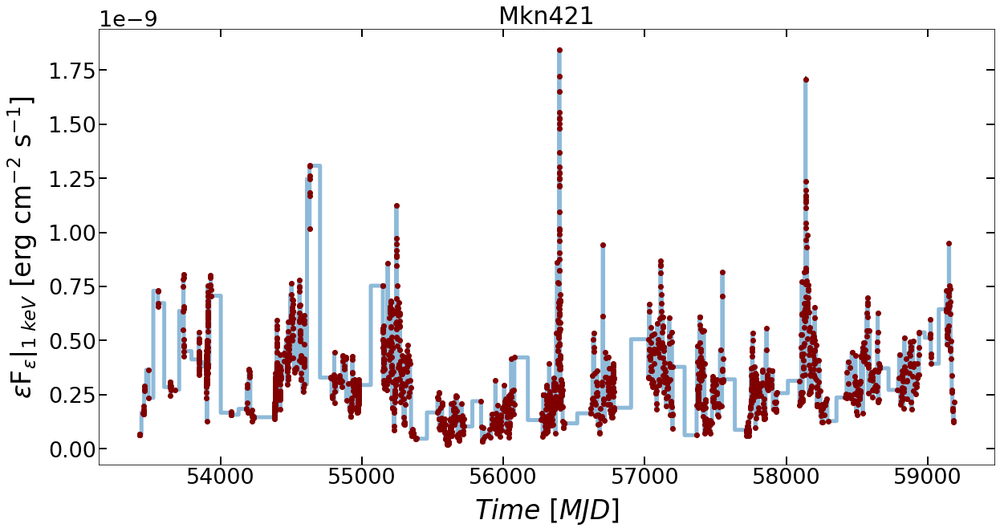
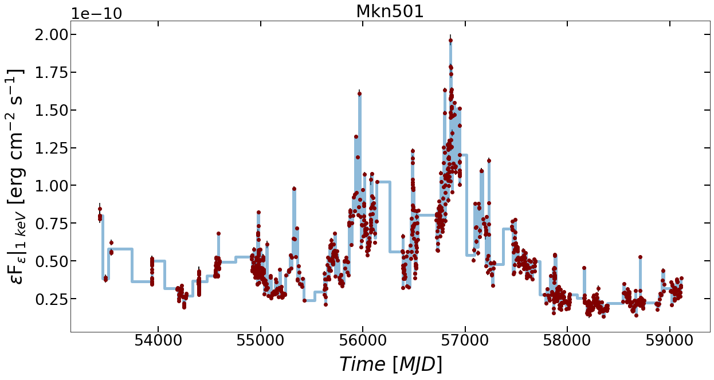
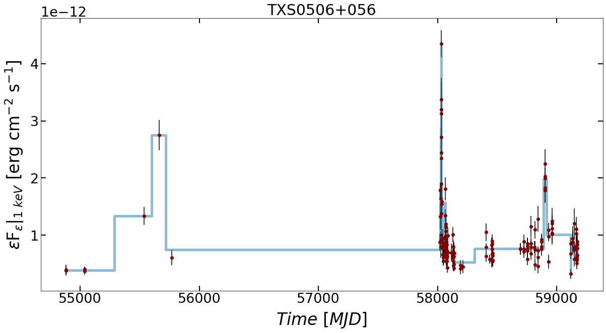
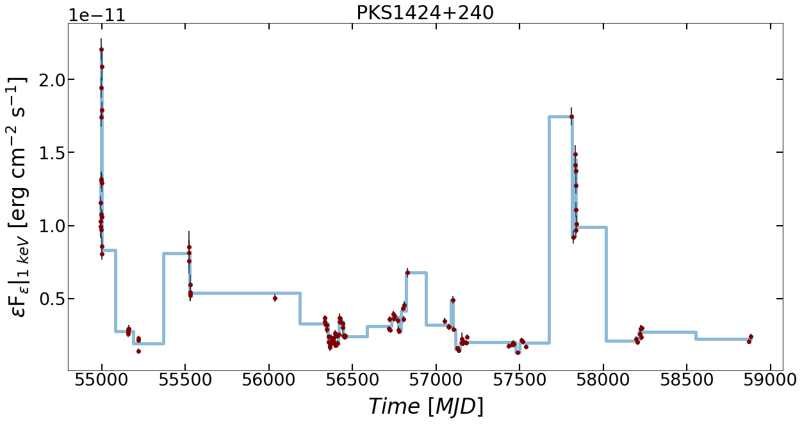
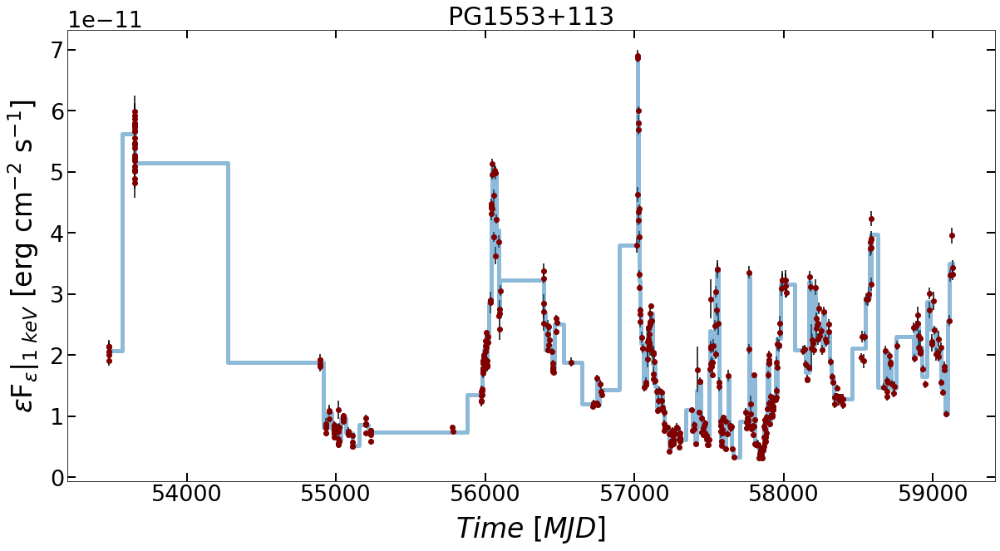
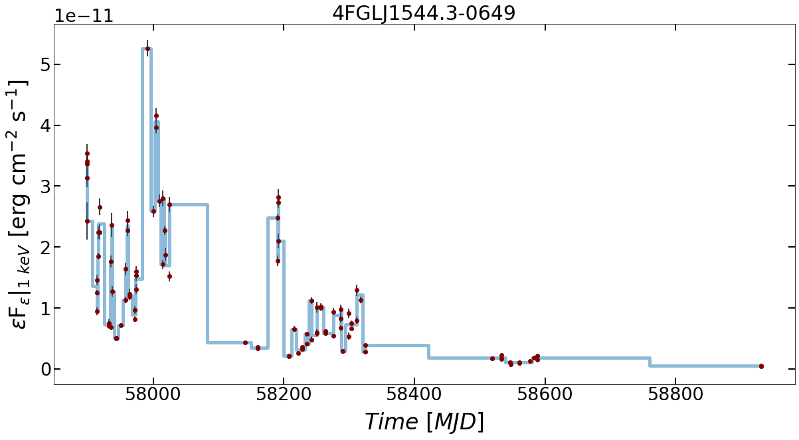
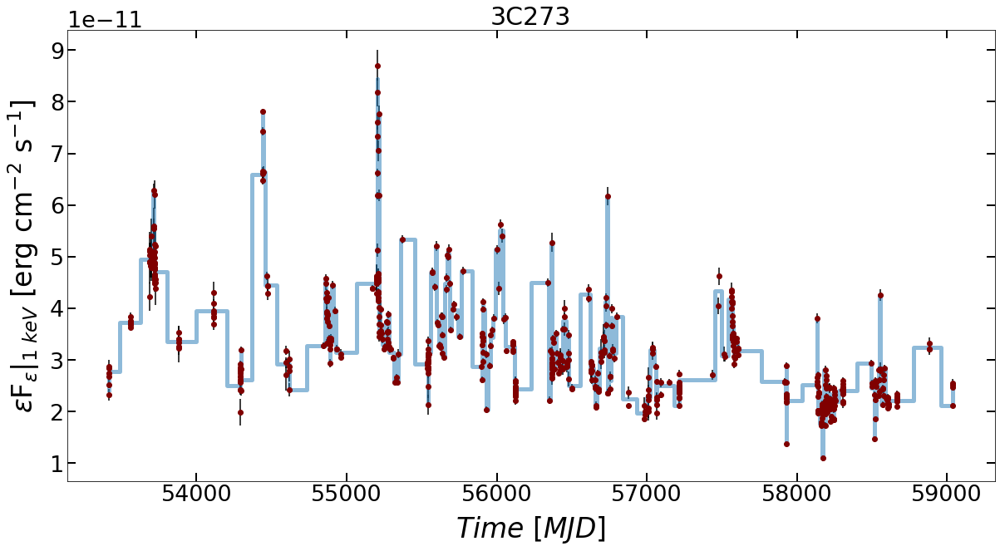
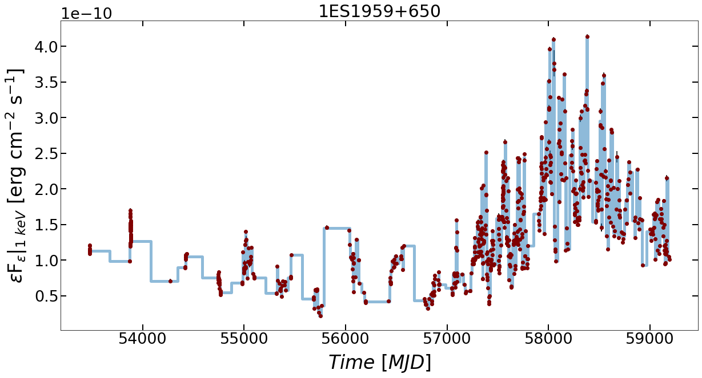
3.1 الكتل البايزية وتعريف التوهجات
للبحث عن تقلبية الأشعة السينية، نطبق خوارزمية الكتل البايزية على كل منحنى ضوء الأشعة السينية في العينة 66 6 يمكن العثور على جميع منحنيات الضوء مع تمثيل الكتلة البايزية في https://stamstath.wixsite.com/1kevxrtlc. تجد الخوارزمية التقسيم الأمثل للبيانات مع مراعاة التقلبات الإحصائية الناتجة عن أخطاء القياس. يتيح لنا ذلك تمثيل كل منحنى ضوئي من خلال سلسلة من "الكتل" المتجاورة حيث يعتبر التدفق ثابتًا. يوفر تمثيل الكتلة هذا طريقة موضوعية لاكتشاف الاختلافات الكبيرة في منحنى الضوء بغض النظر عن الاختلافات في الفجوات أو التعرض. ومع ذلك، نلاحظ أنه لا يمكننا التحقق من الاختلافات في التدفق الأقصر من المدة النموذجية للقطة XRT، لأن هذا هو لبنة بناء منحنيات الضوء لدينا. نحن نستخدم تطبيق astropy لخوارزمية الكتل الافتراضية (Price-Whelan et al., 2018) الموضحة في Scargle et al. (2013)، مع خيار "التدابير" في وظيفة اللياقة البدنية واحتمال الإنذار الكاذب . ترتبط هذه المعلمة بالسابق في عدد الصناديق، ncpprior، والعدد الفعلي لنقاط البيانات كـ ncp. في حين أن يؤثر على العدد الإجمالي للكتل التي تبني منحنى الضوء، فإننا نتوقع عدم وجود اختلافات كبيرة في حالات التوهج المشتقة والعدد الإجمالي لأحداث النيوترينو لـ (لمزيد من التفاصيل، راجع الملحق C). تتم الإشارة إلى تمثيل الكتلة البايزية لمنحنيات الضوء الواردة في الشكل 2 بخطوط صلبة. ارتفاع كل منهما الكتلة هي الوسط الإحصائي لجميع قياسات التدفق التابعة لها. يتم تمثيل الفجوات الكبيرة بين نقاط البيانات المتتالية بكتل ذات مدة طويلة. عادةً لا تحتوي هذه الخطوط الأفقية الطويلة على أخذ عينات بين نقطة البيانات وكتلة جديدة. لذا، ينبغي تفسير هذه الكتل على أنها فترات من التدفق المستقر بحذر. سنناقش بمزيد من التفصيل تأثير الكتل طويلة الأمد على نتائجنا لاحقًا في القسم 5.1. تم اقتراح عدة تعريفات للتوهجات في الأدبيات (على سبيل المثال Resconi et al., 2009; Ahnen et al., 2016; Meyer et al., 2019). يمكن تعريف التوهجات، على سبيل المثال، من خلال زيادة في تدفق الكتلة بعامل 2 على الأقل. في هذه الحالة، يمكن أن يتكون التوهج من عدة كتل صاعدة على التوالي. وبدلاً من ذلك، يمكن تعريف التوهجات باستخدام منحنيات الضوء مباشرة وليس تمثيل الكتلة البايزية الخاصة بها. على سبيل المثال، عرف Nalewajko (2013) التوهجات على أنها فترات زمنية تحتوي على الحد الأقصى المحلي للتدفق الذي يتجاوز التدفق خلاله نصف قيمة الذروة. لن يسمح هذا التعريف بتداخل أي شعلتين. يمكن أيضًا تحديد التوهجات من خلال إيجاد الحد الأقصى المحلي لمنحنى الضوء، ومن ثم تركيبها باستخدام النماذج الوظيفية المحددة مسبقًا (على سبيل المثال، وظائف الأسية قطعة الحكمة Valtaoja et al., 1999; Abdo et al., 2010b; Abeysekara et al., 2018). تم تقديم طريقة بديلة لدراسة تقلبية التدفق في منحنيات الضوء الساطع ودراسة خصائص التوهجات بواسطة Liodakis et al. (2018). استخدم هؤلاء المؤلفون نموذجًا هرميًا بايزي يتعامل مع كل منحنى ضوئي على أنه تراكب من التوهجات بأشكال مختلفة. في هذا النهج، يمكن أن تتكون الذروة في منحنى الضوء من عدة "توهجات" متداخلة. في حين أن تعريف التوهجات قد يؤثر على الخصائص الإحصائية لحالات التوهج المستنتجة (أي المدة والتدفقات)، فمن غير المتوقع أن يؤثر بشكل كبير على التوهج، وبالتالي العدد المتوقع لأحداث النيوترينو من التوهجات. في هذا العمل نستخدم التعريفات التالية. تعريف 1 (توهج). التوهج هو أي كتلة ذات تدفق يتجاوز القيمة المتوسطة لجميع قياسات التدفق بمعامل . هنا، هو عدد صحيح و هو الميل المعياري لقياسات التدفق.
تعريف 2 (مدة التوهج). تُستخدم مدة كتلة التوهج، ، كبديل لمدة توهج الأشعة السينية، اللازمة لحساب أحداث النيوترينو (انظر المعادلة 10).
لذلك، عندما يتم العثور على كتلتين متتاليتين أو أكثر للتغلب على عتبة التوهج، يتم التعامل معهما على أنهما توهجات منفصلة. اعتمادًا على ، هناك احتمال أن تكون كتلة التوهج المحددة عبارة عن تعزيز حقيقي في تدفق الفوتون للمصدر أو تقلب في متوسط مستوى التدفق. رغبةً في التحقق من العلاقة المحتملة بين تدفق كتلة التوهج ومدتها، نميز أيضًا التوهجات في نوعين على النحو التالي
-
•
النوع أ:
-
•
النوع ب:
قد يكون هذا التصنيف ظاهريًا ولكنه يمكن أن يساعدنا في التحقق مما إذا كان نوع معين من التوهجات له مساهمة أكبر في تدفق النيوترينو لمصدر ما (أي أننا نتوقع تدفق نيوترينو أعلى من توهج من النوع B بنفس المدة مقارنة بالتوهج من النوع A لمصدر معين).
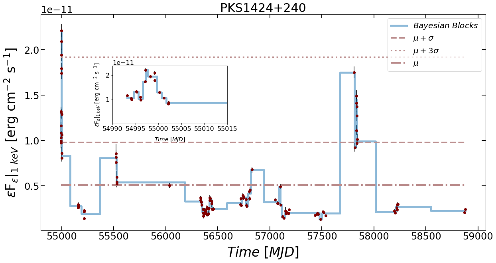
تحديد التوهجات77 7 من الآن فصاعدا، نستخدم المصطلحين ”التوهجات” و”كتل التوهج” بالتبادل. موضح في الشكل. 3، حيث نعرض منحنى الضوء 1 keV الكامل لـ PKS 1424+240 والاثنين عتبات التدفق التي تمت مناقشتها أعلاه (خط متصل ومتقطع) ويشير الخط المنقط المتقطع إلى متوسط جميع قياسات التدفق. في الأوقات المبكرة ( MJD)، كان المصدر في حالة توهج. إذا قمنا بتكبير هذا الجزء من منحنى الضوء (انظر الرسم الداخلي)، فيمكننا تحديد عدة كتل ذات فترات قصيرة ( d) و (النوع A)، في حين أن كتل 2 فقط تتجاوز عتبة (النوع B). يتم عرض مدة وتوزيعات التدفق لجميع التوهجات المحددة في العينة في القسم 5.1.
4 عدد أحداث النيوترينو المتوقعة
يمكن حساب العدد المتوقع للميون بالإضافة إلى نيوترينوات الميون المضاد من توهج الأشعة السينية على النحو التالي:
| (10) |
حيث افترضنا خلط النيوترينو الفراغي واستخدمنا 1/3 لتحويل جميع النكهات إلى تدفق نيوترينو الميون. علاوة على ذلك، تحدد و مدة توهج الأشعة السينية على أن و هي المساحة الفعالة لمصدر النقطة المعتمدة على الطاقة والمعتمدة على الميل في IceCube (Aartsen et al., 2020; IceCube Collaboration et al., 2021). Swift، الملاحظات الخاصة بمصادر معينة، مثل Mkn 421، متاحة منذ 2005، قبل تاريخ بدء عمليات IceCube بوقت طويل. لذلك نستخدم مناطق فعالة مختلفة لحساباتنا (انظر الجدول 1) اعتمادًا على تكوين IceCube في وقت التوهج. لهذا الغرض، نتحقق مما إذا كانت نقطة المنتصف، ، لكتلة التوهج تقع في موسم محدد من تشغيل IceCube ونعتمد المساحة الفعالة المقابلة. بالنسبة للتوهجات التي تحدث قبل بداية IC40، قمنا بتعيين عدد الأحداث يساوي صفر. من أجل التكامل على الطاقات، قمنا بتعيين TeV واستخدام الطاقة القصوى التي يتم حساب لها كـ .
| IceCube configuration | Season (MJD) |
|---|---|
| IC40 | |
| IC59 | |
| IC79 | |
| IC86-I | |
| IC86-II |
يتم حساب تدفق طاقة النيوترينو، ، باستخدام المعادلات (6)-(8). لحساب الأصل غير الهادروني لانبعاث الأشعة السينية غير المتوهجة، كما هو موضح في الشكل 1، نطرح من جميع قياسات تدفق الأشعة السينية، ، متوسط تدفقات الطاقة 0.5-10 keV. نناقش كيف يؤثر هذا الاختيار على توقعاتنا للنيوترينو في القسم 6. اعتمادًا على عدد قياسات التدفق الموجودة داخل كتلة التوهج ذات المدة ، فإننا نتعامل مع التكامل الزمني للمعادلة (10) بشكل مختلف. وبشكل أكثر تحديدًا، إذا كانت هناك قياسات تدفق متعددة داخل كتلة حالة التوهج (أي )، فسيتم تقدير عدد الميونات والميونات المضادة المتوقعة للنيوترينوات بـ
| (11) |
أين يعمل المؤشر على عدد قياسات التدفق، ويشير ، و، و إلى المتوسط على قياسات التدفق، و
| (12) |
يأخذ المصطلح الثاني على الجانب الأيمن من المعادلة (11) في الاعتبار مساهمة الكتلة خارج النافذة الزمنية لقياسات التدفق ( و). يتم إعطاء ذروة طاقة النيوترينو بالمعادلة (2) بعد استبدال بالطاقة القصوى لطيف الأشعة السينية في الفضاء (). اعتمادًا على دليل الفوتونات لطيف قانون القدرة الأنسب في نطاق طاقة 0.5-10 keV، والذي يمكن أن يختلف بين القياسات، فإننا نعتبر خيارين. إذا كان ، ثم keV، وإذا كان قمنا بتعيين keV (أي المتوسط اللوغاريتمي لنطاق الطاقة). في حين أنه من الممكن أن تكون طاقة الذروة الحقيقية لطيف الأشعة السينية (في ) خارج نطاق 0.5-10 keV، إلا أننا نفضل عدم الاستقراء ولكننا نعتمد بدلاً من ذلك فقط على المعلومات الطيفية ضيقة النطاق. إذا كان هناك قياس تدفق واحد فقط داخل كتلة حالة التوهج، فلا يمكننا أن نفعل ما هو أفضل بكثير من افتراض أن تدفق الطاقة 0.5-10 keV وذروة طاقة النيوترينو يظلان ثابتين على مدار النافذة الزمنية للتوهج. في هذه الحالة، يتم تبسيط المعادلة (10) إلى المعادلة التالية
| (13) |
حيث هو التدفق المتوسط المتكامل بين طاقات 0.5 keV و10 keV، و هي مدة كل حالة توهج مستخرجة من تحليل الكتل البايزية لمنحنى الضوء 1 keV.
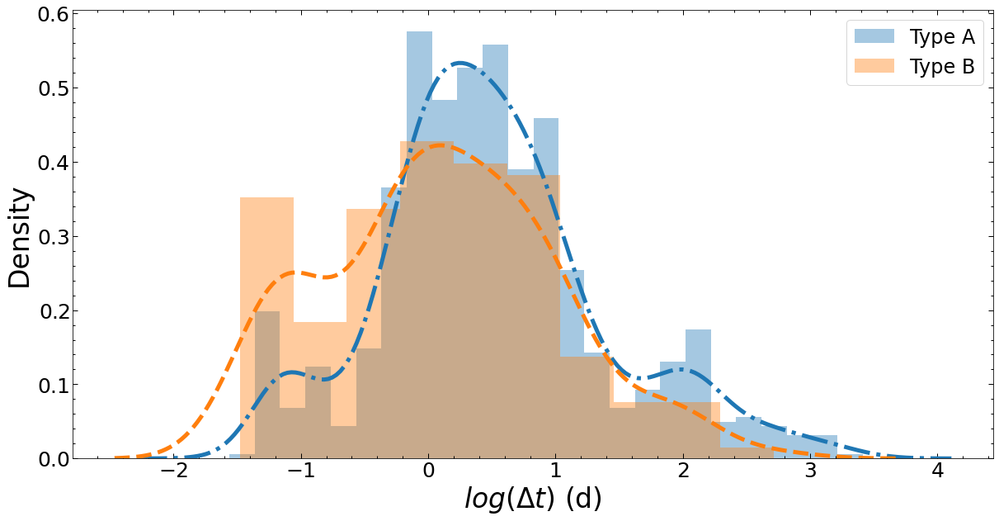
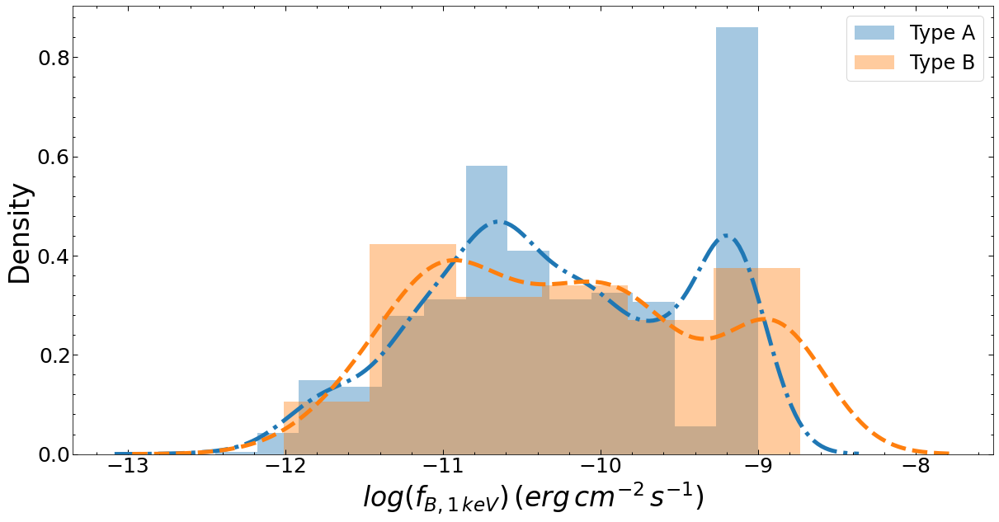
يشكل التدفق الجوي للميون التقليدي بالإضافة إلى النيوترينو المضاد على سطح الأرض خلفية عند الطاقات العالية للبحث عن مصادر النيوترينو الشبيهة بالنقطة. في نموذجنا، يبلغ طيف النيوترينو المصدر ذروته عادةً عند PeV ويتم حساب عدد أحداث النيوترينو فوق TeV. وفوق هذه الطاقة، تكون مساهمة الخلفية الجوية (متوسط الميل) هي أحداث سنويًا ويمكن إهمالها بأمان في معظم الحالات (انظر أيضا Petropoulou et al., 2016, لMkn 421). للاكتمال، نحسب المعدل السنوي للميونات الجوية ونيوترينوات الميونات المضادة فوق 100 TeV القادمة من اتجاه كل مصدر (انظر العمود الأخير من الجدول 2). نحن نقرب التدفق الجوي للميون التقليدي بالإضافة إلى النيوترينو المضاد بواسطة قانون القدرة بمؤشر (Honda et al., 2007)، ونتعامل مع هذا المكون على أنه متناحٍ بحت. من أجل التطبيع عند 100 TeV لمتوسط تدفقات الميون والنيوترينو المضاد في الغلاف الجوي على زاوية السمت، نستخدم القيمة المتوسطة لتنبؤات النموذج كما هو موضح في الشكل. 33 من Fedynitch et al. (2019). يتم بعد ذلك حساب عدد الميون والمضاد الميون المتوقع من الخلفية الجوية باستخدام المعادلة (10) من خلال التكامل في الطاقة والوقت والزاوية الصلبة على افتراض أن تدفق النيوترينو والمساحة الفعالة (نستخدم تكوين IC86-II) ثابتان. نحن ندمج دقة زاويّة نموذجيّة بدرجة 1 لتقدير عدد النيوترينو المتوقع. وبالتالي، فإن التكامل على الزاوية الصلبة في المعادلة (10) يقلل إلى ثابت.
5 النتائج
5.1 توهجات الأشعة السينية
باستخدام منحنيات ضوء الأشعة السينية 1 keV نجد إجمالي حالات التوهج 967 (من كلا النوعين). حول 22% من حالات التوهج () تُعزى إلى Mkn 421، وهو أحد ألمع المتوهجات، ونتيجة لذلك، أفضلها مراقبة في جميع الأطوال الموجية. يعرض الشكل 4 التوزيعات الطبيعية للفترات () والتدفقات عند 1 keV () للكتل المصنفة على أنها توهجات. يتم عرض الرسوم البيانية لأنواع التوهج المختلفة بألوان مختلفة. تتضح مساهمة Mkn 421 في عينة التوهج من خلال أعلى صندوق تدفق في الرسم البياني لتدفقات التوهج (من كلا النوعين). بدلاً من اختبار ما إذا كانت مجموعتا التوهجات مختلفتين، فإننا نشتق تقديرًا لمدى اختلاف القيم المتوسطة والميول المعيارية باستخدام أداة تقدير بايزي (Kruschke, 2013) المطبقة في PyMC388 8 https://docs.pymc.io/notebooks/BEST.html. بالنسبة لاختلاف الوسائل في التدفق (المدة)، تكون 99% على الأقل من قيم الاحتمالية الخلفية أقل (أكبر) من الصفر. يشير هذا إلى أن وسائل المجموعة مختلفة بشكل موثوق. ومع ذلك، فإن الاختلافات في الميول المعيارية للتدفق والمدة أصغر. لا تعكس هذه النتائج بالضرورة الاختلافات الجوهرية بين أنواع التوهجات، حيث يمكن أن تنشأ من تحيزات المراقبة المرتبطة بأخذ عينات غير منتظمة من رصدات XRT. على سبيل المثال، من المرجح أن يتم ملاحظة الحالات ذات التدفقات الأعلى عدة مرات متتالية مرات، في حين يتم ملاحظة حالات التدفق المنخفض بشكل أقل (انظر أيضًا الشكل 2).
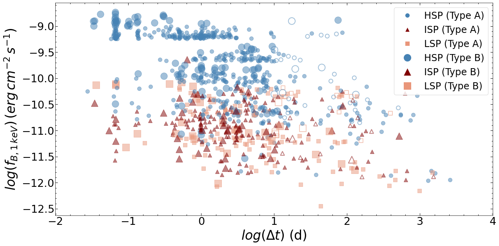
يلخص الشكل 5 النتائج التي توصلنا إليها من خلال إظهار تدفق الكتلة المحسوب من منحنيات الضوء 1 keV، ، كدالة لمدة الكتلة . تشير الرموز المختلفة إلى بلازارات من أنواع طيفية مختلفة، وهي HSP (دوائر)، وISP (مثلثات)، وLSP (مربعات). تكون التوهجات الصادرة عن مصادر HSP في المتوسط أكثر سطوعًا من تلك التي تنتجها كائنات ISP أو LSP. تتوافق مجموعة النقاط مع erg cm-2 s-1 مع Mkn 421، الذي يهيمن على عينتنا من حيث عدد التوهج وسطوع التوهج. لم نجد أي دليل واضح على وجود علاقة خطية بين التدفق ومدة الكتل المحددة على أنها توهجات أو نوع التوهجات مع المدة أو التدفق. إن التحليل الإحصائي الدقيق لخصائص التوهج غير مبرر في هذه المرحلة بسبب تحيزات المراقبة التي تؤثر على عينتنا. على سبيل المثال، فإن مقارنة تدفقات التوهج والمدد ودورات العمل بين المصادر ذات تغطية الأشعة السينية المختلفة جدًا (على سبيل المثال Mkn 421 وTXS 0506-056) لن تسفر عن نتائج ذات معنى. سنعود إلى هذه النقطة في القسم 6. تشير الرموز المفتوحة في الشكل 5 إلى كتل تحتوي على d تحتوي على قياس تدفق واحد فقط (للاطلاع على توقعات النيوترينو من مثل هذه التوهجات، راجع القسم 4). في الواقع، بعد الفحص البصري لتمثيل الكتلة البايزية لجميع منحنيات الضوء، نجد أن معظم الكتل ذات d تحتوي على لقطات XRT (انظر على سبيل المثال الكتل الثانية والثالثة من بداية منحنى الضوء لـ TXS 0506+056 في الشكل 2). يؤدي استخدام تدفق لقطات XRT مع مدة إجمالية تبلغ بضعة كيلو بايت كبديل لحالة تدفق المصدر على فترات مدتها أسبوع أو حتى شهرًا إلى ظهور شكوك كبيرة في تأثر النيوترينو المتوقع. ومن ثم، إذا كانت مدة الفدرة هي d وتحتوي على ملاحظة XRT واحدة فقط، فإننا نضع معادلة d (13)، وهي قريبة من القيمة الأكثر احتمالاً لتوزيع المدة (انظر الشكل 4). وبالمثل، تحتوي معظم الكتل ذات d على عدد قليل من القياسات المجمعة في الوقت المناسب، والتي تشغل جزءًا صغيرًا فقط من إجمالي مدة الكتلة. هذه الكتل التي تستمر لمدة شهر هي نتيجة للفجوات الكبيرة بين عمليات الرصد Swift(انظر على سبيل المثال المنحنى الضوئي لـ PG 1553+113 في الشكل 2) الناجم عن عدم وجود مراقبة للأشعة السينية في السماء بأكملها. ونظرًا لأننا لا نستطيع التنبؤ بسلوك المصدر خلال هذه الفترات الطويلة، فسوف نقوم أيضًا بالإبلاغ عن العدد المتوقع للنيوترينوات من كل مصدر بعد استبعاد هذه الكتل (لمزيد من التفاصيل، راجع القسم 5.2).
5.2 النيوترينوات من توهجات الأشعة السينية
يُظهر الشكل 6 العدد المتوقع لأحداث نيوترينوات الميون ومضادات نيوترينوات الميون من توهجات الأشعة السينية التي تحدث بعد 54562 MJD كدالة لمدة الكتلة. يتم استخدام ألوان مختلفة للإشارة إلى تدفق التوهج 1 keV (انظر وسيلة الإيضاح الداخلية). استخدمنا نفس صناديق التدفق كتلك التي حددها مقدر Freedman-Diaconis للرسم البياني للتدفق الموضح في الشكل 4 (اللوحة السفلية). لمدة ثابتة، وجد أن التوهجات ذات تدفقات الأشعة السينية الأعلى تنتج عددًا أكبر من الأحداث مقارنة بالتوهجات ذات تدفقات الأشعة السينية المنخفضة. تعكس هذه النتيجة بشكل أساسي الافتراض الرئيسي للنموذج، وهو (انظر أيضًا القسم 2). سوف تقع كل حالة تدفق وسيطة داخل هذه الخطوط الحدودية. العلاقة بين مدة كل حالة توهج والعدد المتوقع للأحداث (في الفضاء اللوغاريتمي) موصوفة جيدًا بواسطة دالة خطية، كما هو موضح في الانحدار الخطي الملائم للبيانات (انظر الخطوط الصلبة). يعد الارتباط بين و دليلاً آخر على عدم وجود علاقة قوية بين تدفق الأشعة السينية ومدة التوهجات (انظر أيضًا الشكل 5). وبالتالي، فإن التوهجات ذات التدفق المماثل ستنتج المزيد من النيوترينوات إذا استمرت لفترة أطول. إن تشتت رقم النيوترينو داخل صندوق تدفق واحد هو في الغالب نتيجة لمنطقة الكاشف المعتمدة على الميل (انظر المعادلة (10)). على سبيل المثال، يتم تقليل التشتت بشكل كبير في الصندوقين اللذين يتمتعان بأعلى تدفقات للأشعة السينية () والتي يهيمن عليها مصدر واحد (Mkn 421).
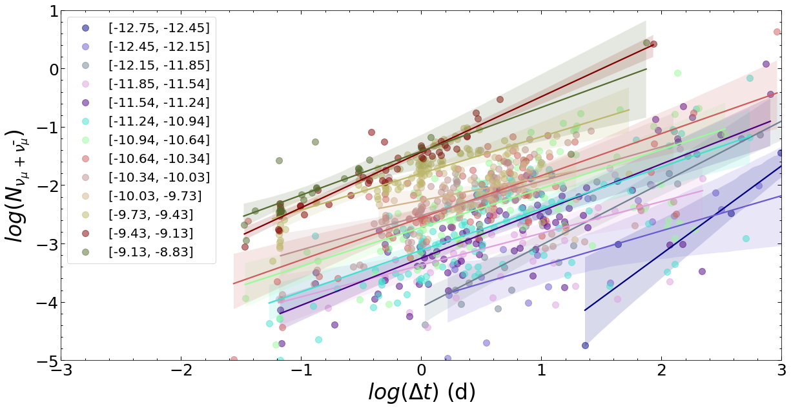
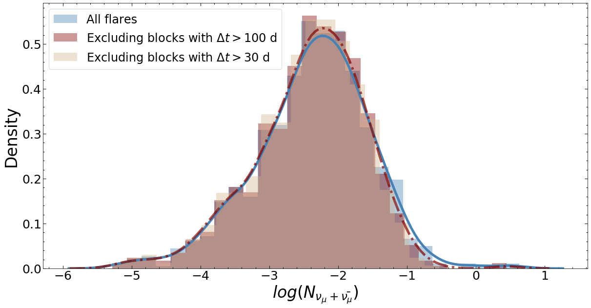
يُظهر الشكل 7 توزيع العدد المتوقع لأحداث نيوترينوات الميون ومضادات نيوترينوات الميون من جميع التوهجات التي تحدث بعد 54562 MJD (الأزرق)، الذي يحتوي على متوسط أحداث . نحن أيضًا نرسم الرسوم البيانية لـ بعد استبعاد مساهمات الكتل مع d (كستنائي) و30 d (أسمر). على الرغم من أن اختيار الإطارات الزمنية المحددة ليس صارمًا، إلا أن الدافع وراء ذلك هو ما يلي: (أ) تحتوي الكتل التي تحتوي على d، في عدد كبير من الحالات، على لقطات XRT لها فواصل زمنية مماثلة لمدة الكتلة نفسها؛ (ب) بعد الفحص البصري للتمثيل البايزي لمنحنيات الضوء في عينتنا، نجد أن الكتل ذات d غالبًا ما تحتوي على قياسات XRT مجمعة تشغل جزءًا صغيرًا فقط من مدة الكتلة. كما تمت مناقشته في القسم 5.1، عادةً ما تكون هذه الكتل التي تستغرق شهرًا نتيجة لفجوات كبيرة بين ملاحظات Swift(انظر على سبيل المثال منحنى الضوء لـ PG 1553+113 في الشكل 2). ولذلك فإن مؤثرات النيوترينو المحسوبة بافتراض مستوى تدفق ثابت لمثل هذه الفترة الطويلة غير مؤكدة إلى حد كبير. ومع ذلك، يوضح الشكل 7 أن الشكل العام، بما في ذلك المتوسط والوسيط، لتوزيع الحدث لا يتغير بعد إزالة الكتل باستخدام d. في الواقع، لا يوجد سوى عدد قليل من البلازارات في عينتنا التي تأتي مساهمتها الرئيسية في عدد النيوترينو من التوهجات ذات d. تشير هذه النتائج إلى أن الجزء الأكبر من أحداث النيوترينو في عينتنا ينشأ من التوهجات ذات فترات أقصر بكثير والتي تكون تنبؤاتها بتأثير النيوترينو أكثر قوة. لتوضيح ذلك بشكل أفضل، نقدم خريطة الكثافة ثنائية الأبعاد لـ مقابل في الشكل 8. وفي الواقع، لوحظت أعلى كثافة في d و. ومن ثم، فإن الكتل التي تحتوي على d والتي قد تكون مصادر لعدم اليقين المنهجي الكبير في تدفق النيوترينو لا يبدو أنها تؤثر على توقع النيوترينو للعينة بأكملها.
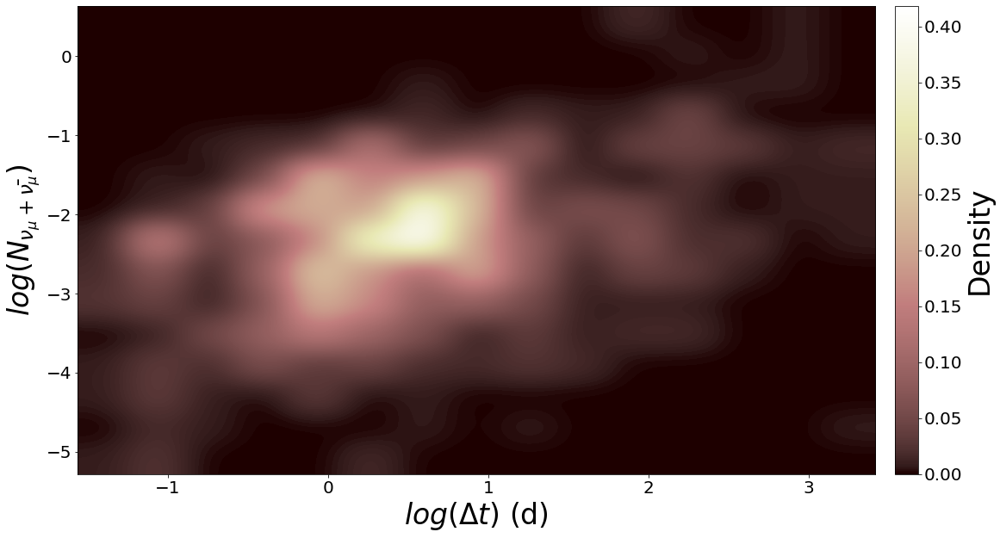
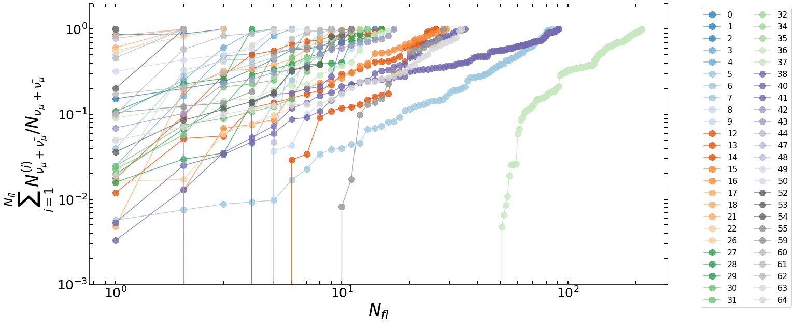
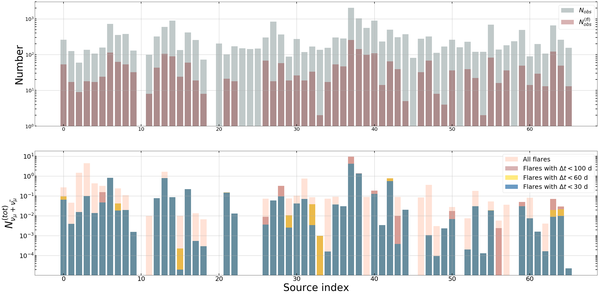
في الشكل 9 نقدم العدد التراكمي لأحداث نيوترينو الميون والمضاد الميون المتوقعة من كل مصدر باستخدام توهجات الأشعة السينية . بدافع من المناقشة السابقة، نعرض فقط نتائج التوهجات باستخدام d (التي تحدث بعد 54562 MJD). يتم تطبيع كل منحنى إلى العدد الإجمالي المتوقع لأحداث النيوترينو. نجد أن غالبية المصادر تعرض أقل من 10 توهجات تساهم في إشارة النيوترينو على مدار تغطية Swift. الزيادة المفاجئة في عدد النيوترينو التراكمي الموجود في عدد قليل من المصادر، بما في ذلك Mkn 421 (مؤشر 37)، تحدث عند أول توهج يحدث بعد تاريخ بدء IceCube بتكوين IC40. يُظهر فحص المنحنيات التراكمية لـ 1ES 1959+650 (الفهرس 6) وMkn 501 (الفهرس 38) أن عددًا إجماليًا مشابهًا من التوهجات () يساهم في العدد الإجمالي المتوقع للنيوترينوات لكل مصدر. ومع ذلك، فإن تدرج المنحنيين مختلف تمامًا، مما يشير إلى سلوك زمني مختلف بين هذين المصدرين. في الواقع، كما هو مبين في الشكل 2، يبدو أن 1ES 1959+650 قد دخلت حالة تتميز بمتوسط تدفق أعلى للأشعة السينية ومزيد من التقلب بعد MJD، بينما كان Mkn 501 أكثر نشاطًا في أوقات سابقة MJD. تسلط هذه النتائج الضوء على أهمية المراقبة المنتظمة بالأشعة السينية للبلازارات على مدى فترات زمنية طويلة في وضع تنبؤات قوية لانبعاثها متعدد الرسل. ننتقل بعد ذلك لحساب العدد الإجمالي لنيوترينوات الميون ومضادات نيوترينوات الميون، ، المتوقع من كل مصدر من خلال تلخيص توقعات التوهجات الفردية. تم تلخيص نتائجنا في الشكل 10 (اللوحة السفلية) في شكل مخطط شريطي. يتم تمييز المصادر بفهرس كما هو محدد في الجدول 2. تشير الألوان المختلفة إلى النتائج التي تم الحصول عليها بعد استبعاد الكتل ذات فترات معينة (انظر وسيلة الإيضاح الداخلية للحصول على التفاصيل). لم يتم الإبلاغ عن أي نتائج للمصادر التي لا تحتوي على كتل تستوفي حالة التوهج لدينا (أي ، راجع أيضًا القسم 3.1 للحصول على التفاصيل). هناك عدد قليل من المصادر التي تنشأ إشارة النيوترينو الخاصة بها فقط من كتل طويلة الأمد (انظر على سبيل المثال، أشرطة ملونة واحدة)، والتي تكون نتيجة للفجوات الطويلة بين رصدات XRT. في هذه الحالة، من المحتمل أن تكون إشارة النيوترينو المبلغ عنها مبالغة في التقدير. بالنسبة للمصادر المتبقية للعينة، فإن توقع النيوترينو الحقيقي يحده الأشرطة ذات اللون الأزرق والأسمر، حيث يوفر الأخير حدًا أعلى ضعيفًا إلى حد ما. فقط مصادر 2 في العينة لديها إجمالي عدد نيوترينو أكبر من واحد بعد استبعاد الكتل طويلة الأمد، وهي Mkn 421 (الفهرس 37) وMkn 501 (الفهرس 38). لم يرتبط أي منها على الإطلاق بحدث مسار نيوترينو عالي الطاقة، في حين تم الإبلاغ عن Mkn 421 كمصدر مرشح لحدث نيوترينو شبيه بالسلسلة (Padovani and Resconi, 2014). سنناقش الآثار المترتبة على النتائج التي توصلنا إليها في القسم 6. في حين أن المخطط الشريطي في اللوحة السفلية من الشكل 10 يوفر نظرة سريعة على نتائجنا، إلا أنه لا ينبغي استخدامه بمفرده لمقارنة المصادر مباشرة من حيث مخرجات النيوترينو الخاصة بها. تعتمد النتائج الواردة في الشكل 10 بشدة على عدد رصدات XRT المعروضة على اللوحة العلوية (الأشرطة الرمادية). بشكل عام، المصادر التي لديها المزيد من الملاحظات تميل إلى الحصول على أعداد نيوترينو متوقعة أعلى (انظر، على سبيل المثال، Mkn 421 (الفهرس 37) وMkn 501 (الفهرس 38)). ويرجع ذلك إلى حقيقة أن التوهجات الصادرة من المصادر ذات التغطية الزمنية الضعيفة من المرجح أن يتم تفويتها. علاوة على ذلك، يرتبط عدد الملاحظات الخاصة بمصدر معين بعدد الملاحظات التي تنتمي إلى كتل التوهج (قارن بين الأشرطة الرمادية والمارونية في اللوحة العلوية). ولكن هناك استثناءات لهذه القاعدة العامة. على سبيل المثال، GB6J0521+2113 (الفهرس 33) وGB6J1159+2914 (الفهرس 34) لهما عدد مماثل من قياسات XRT، لكنهما يختلفان في العدد المتوقع للأحداث بواسطة أمرين من حيث الحجم. يمكن أن يعزى هذا الاختلاف إلى الاختلافات في عدد حالات التوهج (قارن القضبان المارونية للكائنات 33 و34 في لوحة الشكل العلوي) والمساحة الفعالة لـ IceCube. وبالتالي، تتأثر تنبؤات النيوترينو أيضًا بالسلوك الزمني الفريد لكل مصدر، والمعلمات الفيزيائية التي تصف منطقة التوهج، وميل المصدر كما سنوضح في الفقرة التالية.
5.2.1 تأثيرات معلمات النموذج وميل المصدر
لقد قدمنا حتى الآن نتائج للقيم الثابتة لشدة المجال المغناطيسي ( G) وعامل دوبلر () في جميع المصادر. نعرض هنا تأثيرات كلا معلمتي النموذج على التنبؤات الخاصة بعدد النيوترينو الإجمالي الناتج عن توهجات الأشعة السينية، ونناقش دور ميل المصدر. القيمة الأعلى لقوة المجال المغناطيسي من شأنها أن تخفض عامل البروتون لورنتز اللازم لإنتاج فوتونات السنكروترون ذات الطاقة (انظر المعادلة 1). بالنسبة للمجالات المغناطيسية القوية بما فيه الكفاية، فمن الممكن أن ينخفض عامل البروتون لورنتز إلى ما دون قيمة العتبة لإنتاج البيون على فوتونات السنكروترون ذات نفس الطاقة (انظر المعادلة 2). يوضح الشكل 11 اعتماد إجمالي عدد النيوترينو (بعد استبعاد الكتل طويلة الأمد) على لبعض مصادر عينتنا التي تم عرض منحنيات الضوء في الشكل 2. لتوضيح تأثيرات شدة المجال المغناطيسي بشكل أفضل على إجمالي عدد الأحداث، اعتمدنا قيمة مشتركة لطاقة فوتون السنكروترون ( keV) وعامل دوبلر (). يتم استخدام الخطوط الصلبة لتحديد قيم المجال المغناطيسي التي تلبي عتبة الطاقة ()، بينما يتم استخدام الخطوط المتقطعة بخلاف ذلك.
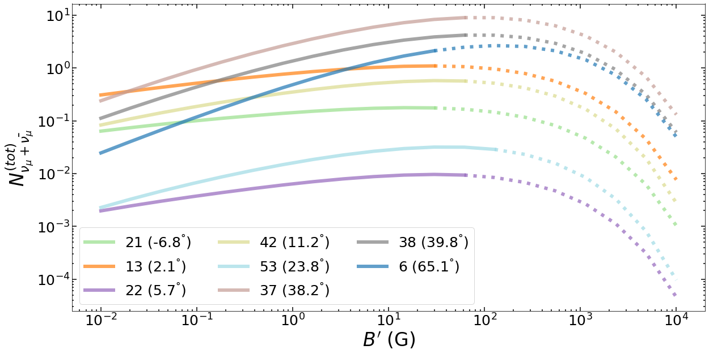
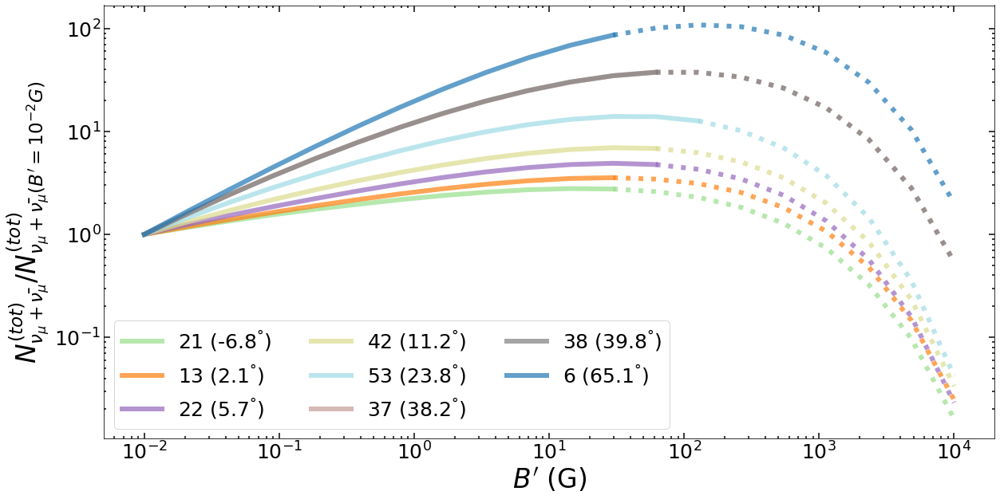
تتكون جميع المنحنيات من قانون قوة لقيم المجال المغناطيسي المنخفضة بما فيه الكفاية، يليها قطع أسي للقيم الأكبر للمجال المغناطيسي. يمكن فهم شكل المنحنيات على النحو التالي. مع ملاحظة أن (انظر المعادلة 2) وتقريب المساحة الفعالة للكشف عن النيوترينو باستخدام دالة المتمركزة في الطاقة ذات القيمة القصوى، أي ، قد نكتب ، حيث (انظر المعادلة 12). بالنسبة إلى ، نستعيد اعتماد قانون القدرة على ، أي ، بينما بالنسبة إلى نحصل على (هنا هي معلمة تعتمد على عامل دوبلر والانزياح الأحمر للمصدر). وبالتالي، هناك قيمة حرجة للمجال المغناطيسي، ، لكل مصدر تزيد من عدد النيوترينو المتوقع. تحت تقريب الدالة لـ ، نجد . في الواقع، من المتوقع أن يكون اعتماد على أضعف، نظرًا لأن المساحة الفعالة IceCube لها ذروة واسعة. تعتمد قيمة المجال المغناطيسي الحرجة هذه على ميل المصدر من خلال ، وهي دالة تناقصية للزاوية . ونتيجة لذلك، تحصل البلازارات ذات زوايا الميل المنخفضة على الحد الأقصى لعدد النيوترينو الخاص بها عند قيم أقل لشدة المجال المغناطيسي مقارنة بالأجسام ذات الميول الأعلى. يصبح هذا التأثير أكثر وضوحًا في اللوحة السفلية من الشكل 11 حيث يتم تطبيع كل منحنى إلى قيمته عند G.
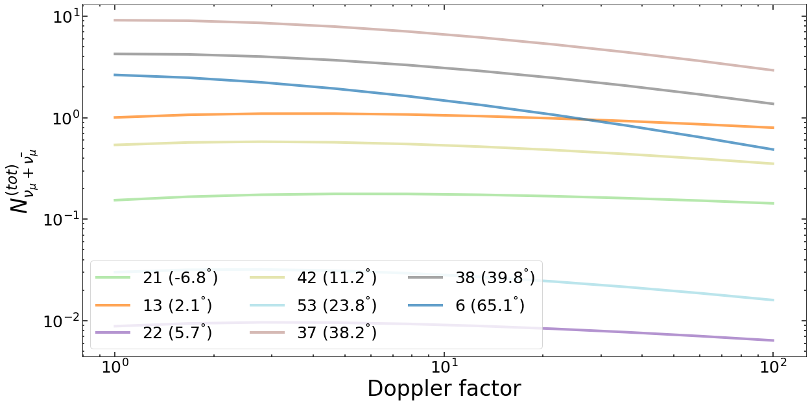
وبالمثل، فإن العدد الإجمالي للنيوترينو المتوقع يعتمد على عامل دوبلر من خلال . ومع ذلك، فإن تأثيراتها تكون أقل وضوحًا في نطاق القيم المتوقعة للطائرات السترية، كما هو مبين في الشكل 12.
6 مناقشة
لقد قدمنا تنبؤات لإشارة النيوترينو المتوقعة من توهجات الأشعة السينية باستخدام السيناريو النظري المقترح مؤخرًا (Mastichiadis and Petropoulou, 2021). ووفقا لها، يتم تشغيل توهجات الأشعة السينية بواسطة إشعاع السنكروترون من البروتونات المتسارعة بشكل متقطع والتي تنتج البيون على فوتونات السنكروترون الخاصة بها، مما يؤدي إلى توهج نيوترينو عالي الطاقة. باستخدام عينة من البلازارات 66 التي تمت ملاحظتها على الأقل مرات 50 باستخدام Swift/XRT، قمنا بحساب عدد نيوترينوات الميون والمضاد الميون فوق 100 TeV المتوقعة من توهجات الأشعة السينية خلال فترة حياة IceCube. هذه هي المرة الأولى (على حد علمنا) التي يتم فيها استخدام بيانات Swift/XRT لهذا الغرض. إن لمعان مجموعة البروتونات المتسارعة في الإطار المتحرك، ، الذي يعمل على تشغيل توهج الأشعة السينية ذات اللمعان المرصود (في نطاق 0.5-10 keV) هو
| (14) |
حيث هو نصف قطر منطقة الانبعاث. لاشتقاق المعادلة أعلاه، افترضنا من أجل البساطة توزيع بروتون أحادي الطاقة يتمركز في (انظر المعادلة 1)، ولكن يمكن تعميم هذه التقديرات بسهولة لتوزيع البروتونات بموجب قانون القدرة. تم تطبيع لمعان الأشعة السينية إلى erg s-1، وهو قريب من متوسط لمعان الأشعة السينية للتوهجات (في المقياس اللوغاريتمي) من عينتنا. لمعان إدنجتون لثقب أسود متراكم بكتلة هو erg s-1. إن لمعان البروتون المصحح في إطار المراقب هو ، حيث يُفترض وجود نفاثة مخروطية بزاوية نصف مفتوحة تبلغ . وباستخدام المعادلة (14) نجد ذلك
| (15) |
بالنسبة لمعلمات النموذج الافتراضية نجد أن لـ ، والذي يفترض أن المجرة المضيفة هي مجرة إهليلجية عملاقة نموذجية (Labita et al., 2006). كتلة الثقب الأسود هذه قريبة من القيمة المتوسطة لكتلة الثقب الأسود () المقدرة بواسطة (Paliya et al., 2021) من عينة كبيرة تتكون من آلاف البلازارات. علاوة على ذلك، فهي قريبة من القيمة المتوسطة لكتلة الثقب الأسود التي تم تقديرها مؤخرًا لعينة من المجرات 47 التي قدمها بادوفاني وآخرون، 2021. طالما أن توزيع البروتون ليس قانون طاقة مسطحًا (أي ) بدءًا من طاقة كتلة استراحة البروتون، فإن متطلبات الطاقة للنموذج أقل من تلك الموجودة في النماذج الهادرونية الأخرى لانبعاث البلازار (على سبيل المثال Petropoulou et al., 2015, 2016; Liodakis and Petropoulou, 2020). تتم كتابة نسبة كثافة طاقة البروتون (المتحركة) إلى كثافة طاقة المجال المغناطيسي، ، على النحو التالي
| (16) |
وبالتالي فإن المنطقة المنبعثة التي تنتج توهجات الأشعة السينية الهادرونية بعيدة كل البعد عن التقسيم المتساوي للطاقة بين البروتونات النسبية والمجالات المغناطيسية لقيم المعلمات الافتراضية. ومع ذلك، بسبب الاعتماد القوي على المجال المغناطيسي، يمكن الوصول إلى التقسيم المتساوي لـ G (وجميع المعلمات الأخرى ثابتة). وبالتالي، تكون المجالات المغناطيسية القوية أكثر ملاءمة من وجهة نظر الطاقة، إذا لم يكن حجم منطقة التوهج والمجال المغناطيسي مرتبطين. لقد اعتمدنا سيناريو نظريًا لإنتاج النيوترينو العابر في البلازارات حيث يُفترض أن مساهمة المكون الهادروني في انبعاث الأشعة السينية للمصدر لا تذكر إلا أثناء التوهجات. لمراعاة حقيقة أن انبعاث خط الأساس للمصدر ينشأ من مكون لبتوني (مثل إشعاع السنكروترون الإلكتروني في حالة HBLs)، طرحنا من تدفق الكتلة متوسط التدفق لجميع قياسات الأشعة السينية (في نطاق الطاقة 0.5-10 keV)، على افتراض أن الأخير هو وكيل لانبعاث خط الأساس (غير المتوهج). تم بعد ذلك استخدام هذا التدفق «المخفض» لحساب تدفق النيوترينو. وفي بعض المصادر التي لا تحتوي على تغطية طويلة الأجل، قد يوفر متوسط التدفق مبالغة في تقدير التدفق الأساسي. على سبيل المثال، إذا تمت ملاحظة 1ES 1959+650 فقط بعد MJD، فإن متوسط تدفقه سيكون أعلى مرات من متوسط التدفق المقدر من جميع قياساته (انظر الشكل 2). وبدلاً من ذلك، يمكن للمرء استخدام متوسط جميع قياسات التدفق كقيمة تمثيلية لتدفق الأشعة السينية اللبتونية. لذلك كررنا التحليل عن طريق طرح متوسط قياسات تدفق الأشعة السينية (في نطاق طاقة 0.5-10 كيلو فولت) ووجدنا زيادة قدرها في المائة على القيمة المتوسطة لـ . وتبين وجود زيادة قدرها في الكمية الأخيرة، عندما لم يتم إجراء أي تصحيح لانبعاث خط الأساس. وبالتالي، يمكن تعيين نسبة عدم يقين منهجية بنسبة إلى أرقام النيوترينو المتوقعة لحساب الانبعاث اللبتوني غير المتوهج. يمكن أن يكون طيف الأشعة السينية لـ FSRQs أكثر تعقيدًا مما هو عليه في كائنات BL Lac الحقيقية بسبب مكونات الانبعاث الحراري الإضافية. عادةً ما تظهر FSRQs "نتوءًا أزرقًا" في أطيافها منخفضة الطاقة (على سبيل المثال Paltani et al., 1998; Jolley et al., 2009)، وهو مؤشر على الانبعاث من القرص التراكمي. وبالتالي، يمكن أن يكون جزءًا من انبعاث الأشعة السينية المرصودة في FSRQs مرتبطًا بالإشعاع الحراري الناتج عن تدفق التراكم الداخلي (على سبيل المثال Grandi and Palumbo, 2004; Giommi et al., 2012). على الرغم من أننا لم نأخذ هذا المكون في الاعتبار بشكل صريح، فقد افترضنا أن مجموعة الهادرونات مسؤولة عن الانبعاثات التي تتجاوز متوسط التدفق الزمني للمصدر. يتطلب التحليل الأكثر دقة لطيف توهج الأشعة السينية في FSRQs نمذجة مفصلة للمصادر الفردية ويقع خارج نطاق هذا العمل. إن فهم التقلب الزمني وحالات التوهج عبر الطيف الكهرومغناطيسي هو موضوع معقد وغير مفهوم جيدًا. في الأدبيات، حتى توصيف حالات التوهج أو السكون يعتبر غامضًا (انظر Resconi et al., 2009, والمراجع الواردة فيه). وفي الأشعة السينية، على وجه الخصوص، تكون المشكلة معقدة بسبب عدم وجود مسوحات مراقبة السماء كلها حساسة بما يكفي لتوفير قياسات دقيقة للتدفق على أساس يومي. في الماضي، قدمت أدوات مثل All-Sky Monitor (ASM) (Levine et al., 1996) الموجودة على متن Rossi X-ray Timing Explorer (RXTE) بيانات لمدة عقد من الزمن فقط لعدد قليل من ألمع البلازارات. ومع ذلك، نظرًا لطبيعة الكاشف غير التصويرية، ظلت دراسة الحالات الخافتة صعبة. استخدمنا في مشروعنا بيانات Swift/XRT التي يمكن أن توفر تقديرات دقيقة للتدفق ومعلومات طيفية لعينة أكبر بكثير من البلازارات. ومع ذلك، فإن الملاحظات تتبع أنماطًا غير منتظمة ويختلف إيقاع المراقبة كثيرًا بين المصادر. على سبيل المثال، من المرجح أن يتم ملاحظة الحالات ذات التدفقات الأعلى عدة مرات متتالية، في حين من المرجح أن يكون لدى حالات التدفق المنخفض بعض الملاحظات المعزولة كما هو موضح في الشكل 2. تشكل هذه القضايا "مشكلة اكتمال" من المهم معالجتها إذا أراد المرء إجراء مقارنة ذات معنى بين المصادر في العينة. لتصحيح عدم اكتمال منحنيات الضوء في عينتنا، يمكن للمرء استخدام Mkn 421 أو Mkn 501 التي تحتوي على أفضل منحنيات ضوء الأشعة السينية التي تم أخذ عينات منها. ومع ذلك، قد لا يزال هذا التصحيح يقدم أخطاء في تقدير أعداد النيوترينو من مصادر مختلفة، لأن خصائص تقلب الأشعة السينية فريدة بين البلازارات (قارن على سبيل المثال Mkn 421 و1ES 1959+650 في الشكل 2). ولهذا الغرض قمنا بتقدير دورة عمل توهجات الأشعة السينية لكل بلازار، أي النسبة المئوية من عمره الذي يقضيه في حالة التوهج أو الانخفاض. باستخدام بيانات RXTE/ASM، قام Resconi et al. (2009) بحساب دورة عمل التوهجات بناءً على الوقت المطلق الذي يقضيه المصدر في كل مستوى تدفق. بالنسبة لبيانات Swift/XRT، لا يمكن تنفيذ هذه الطريقة بسبب أخذ العينات غير المنتظم وفجوات المراقبة الكبيرة. ولتقدير دورة العمل، نحتاج إلى وضع بعض الافتراضات. أولاً، يكون أخذ عينات Swift/XRT عشوائيًا ويظل السلوك الزمني للمصدر كما هو عند عدم توفر بيانات مراقبة. علاوة على ذلك، فإننا نتجاهل التباين خلال اليوم، بحيث يمثل كل قياس تدفق XRT حالة التدفق للمصدر خلال ذلك اليوم. يمكن بعد ذلك تعريف دورة العمل على أنها عدد مؤشرات Swift/XRT التي تتزامن مع حالة التوهج على إجمالي عدد زيارات XRT، أي . بالنسبة لكل مصدر في العينة، استخدمنا الكتل البايزية لتقدير مدة حالات التوهج (أي )، وقمنا بحساب تدفق النيوترينو خلال هذه الفواصل الزمنية، والعدد الإجمالي للنيوترينوات المتوقعة التي سيتم اكتشافها من جميع التوهجات . يمكن بعد ذلك كتابة متوسط معدل النيوترينو لمصدر ما نتيجة لتوهجات الأشعة السينية . يوفر هذا تقديرًا أكثر تمثيلاً لانبعاث النيوترينو المتوقع من ، لأنه يفسر تقريبًا الاختلافات في تغطية الأشعة السينية بين المصادر. يظهر في الشكل 13 دورة العمل ومتوسط معدل النيوترينو السنوي للمصادر في العينة (انظر أيضًا الجدول 2). لا نجد أي اتجاه واضح بين متوسط تدفق الأشعة السينية ودورة العمل، في حين من المتوقع أن تكون المعدلات السنوية أعلى، بشكل عام، للمصادر ذات متوسط تدفقات الأشعة السينية الأعلى. ويعتمد المعدل السنوي أيضًا على ميل المصدر عبر المساحة الفعالة بحد أقصى قريب من درجة 0. نظرًا لكونه مصدر الأشعة السينية الأكثر سطوعًا (في المتوسط) في العينة، فإن Mkn 421 يتمتع أيضًا بأعلى معدل سنوي على الرغم من ميله الكبير.
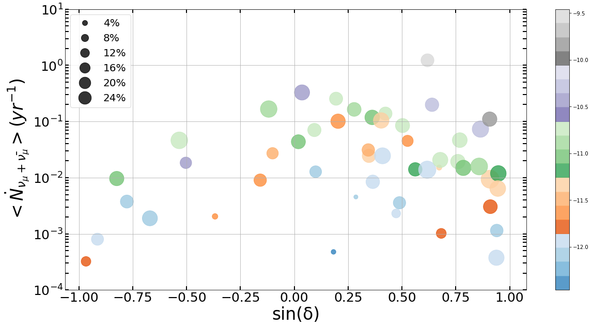
.
حتى الآن، تم ربط حدث نيوترينو واحد فقط شبيه بالسلسلة (مع خطأ زاوي متوسط قدره 16.5) مبدئيًا بـ Mkn 421 (Padovani and Resconi, 2014). في وقت وصول النيوترينو (55685.66 MJD)، لم يكن المصدر مشتعلًا في الأشعة السينية وكان التدفق قريبًا من الحد الأدنى لقيمته كما هو موضح في الشكل 2. إذا كان نموذجنا لإنتاج النيوترينو في التوهجات المتوهجة صحيحًا، فإن نقص النيوترينوات عالية الطاقة من اتجاه Mkn 421 (Aartsen et al., 2019b) يمكن تفسيره بطريقتين: جزء صغير فقط من توهجات الأشعة السينية له أصل هادروني ( فقط مصادر 3 من عينتنا هي المتوافقة موضعيًا مع أحداث مسار نيوترينو الميون الفيزيائي الفلكي التي اكتشفها IceCube، وهي TXS 0506+056 و1ES 0229+200 و PKS 1502+106. تتوفر بيانات Swift/XRT بالقرب من وقت وصول النيوترينو عالي الطاقة فقط في حالة TXS 0506+056 وIC 170922A (IceCube Collaboration, 2018). توقعاتنا من حيث الميون بالإضافة إلى النيوترينوات المضادة للميون بعد اكتشاف النيوترينو هي أحداث 0.0012 في d. المعدل المتوسط المقدر لنيوترينوات الميون ومضادات نيوترينوات الميون من نمذجة SED للتوهج 2017 هو (Keivani et al., 2018; Petropoulou et al., 2020). باعتماد هذا المعدل نجد أحداث 0.0019 لنفس الفترة الزمنية. يتشابه التنبؤان على الرغم من اختلاف النماذج الأساسية للانبعاث الكهرومغناطيسي، لأن الحد الأقصى لتدفق النيوترينو في نموذج Keivani et al. (2018) محدود أيضًا بتدفق الأشعة السينية. خلال فترة ما يسمى بتوهج النيوترينو من TXS 0506+056 في 2014/15 (IceCube Collaboration et al., 2018)، الحدود العليا فقط من Swift/BAT (15-50 keV) (Reimer et al., 2019) وMAXI (4-10 keV) كانا متاحين (Petropoulou et al., 2020). وبالتالي، لا يمكن تطبيق نموذجنا على تلك الفترة. في حين أن 1ES 0229+200 لديه دورة عمل توهج أشعة سينية معتدلة ( في المائة)، فإننا نحدد حالتين فقط من حالات التوهج باستخدام طريقتنا. مع حساب كليهما، نتوقع ظهور في فترة حياة IceCube. ومع ذلك، فإن الرقم ينخفض بشكل ملحوظ (بمعامل )، إذا قمنا بإزالة حالة التوهج مع d باعتبارها غير مادية. ومن المحتمل أن يكون قد تم إغفال العديد من التوهجات الأخرى بسبب النمط غير المنتظم لتوجيهات XRT. في حالة PKS 1502+106، نجد حالة توهج واحدة فقط مع d. واستنادًا إلى بيانات XRT المتوفرة، حصلنا على دورة عمل منخفضة جدًا لتوهجات الأشعة السينية من هذا المصدر. ومن ثم، فإن اكتشاف IC 190730A من اتجاه PKS 105+106 (Taboada and Stein, 2019) سيتم تفسيره على أنه مصادفة في هذا النموذج.
لقد أظهرنا أن توهجات الأشعة السينية الهادرونية يمكن أن تكون مصانع للنيوترينوات عالية الطاقة. الأهداف المثالية لمراقبة الأشعة السينية من حيث تدفقها الأساسي هي بلازارات HSP. هذه المجموعة من البلازارات لها ذروة تردد مكون السنكروترون عند الأشعة السينية. بافتراض أن كل حلقة من توهج الأشعة السينية في بلازارات HSP تتولد من مجموعة هادرونية، فإن توهج الأشعة السينية الهادروني، الذي سيكون فوق خط الأساس للأشعة السينية، سوف ينتج أيضًا توهج نيوترينو بتدفق متكامل متساوي. الكائن المثالي لمراقبة الأشعة السينية هو 1ES 0229+200 (مصدر السنكروترون الشديد) والذي يتزامن مكانيًا مع حدث مسار نيوترينو الميون الفيزيائي الفلكي الذي اكتشفه IceCube (Giommi et al., 2020). إن ميل المصدر ( deg) يجعله مناسبًا أيضًا لاكتشاف النيوترينو نظرًا لعدم وجود قيود من حيث المساحة الفعالة لـ IceCube لهذا الميل. استمرارًا لهذه الفكرة، يوجد نموذج آخر مثير للاهتمام لرصد الأشعة السينية هو PG 1553+113 مع تقلب معتدل للأشعة السينية (دورة العمل في المائة) وعدد إجمالي من نيوترينوات الميون والمضاد الميون المتوقعة . بالإضافة إلى ذلك، فهو أحد البلازارات التي تتمتع بأعلى متوسط معدل لنيوترينوات الميون ومضادات نيوترينوات الميون من التوهجات في عينتنا مع .
تسمح الحساسية المحدودة للمسوحات الحالية لجميع السماء (أي Swift/BAT، MAXI) بمراقبة عدد قليل من ألمع البلازارات. علاوة على ذلك، فإن جميع مهام مراقبة السماء بالأشعة السينية في المستقبل لن تتجاوز حدود الحساسية الحالية. في حين أن مفاهيم المهمة مثل STROBE-X (Ray et al., 2019) يمكن أن تقدم يد المساعدة، إلا أن حالتها غير واضحة. من المراصد الحالية فقط Swift/XRT لديه المرونة اللازمة لعمليات الرصد المتكررة. وبالتالي، فإن استمرار وتعزيز حملات المراقبة Swift/XRT هي الطريقة الوحيدة للحصول على منحنيات ضوئية ذات معنى لدراسة تقلبات التوهج وتقييد دورة العمل لمصادر انبعاث النيوترينو المحتملة.
يمكن التدقيق في سيناريو توهجات الأشعة السينية الهادرونية مع ظهور الجيل التالي من كاشفات النيوترينو والمراقبة المنتظمة للأشعة السينية للتوهجات. إن الجمع بين أحجام الكشف الأكبر، كما هو الحال في IceCube-Gen2 (IceCube-Gen2 Collaboration et al., 2014)، مع موقع KM3Net (Adrián-Martínez et al., 2016)، وBaikal-GVD (Baikal-GVD Collaboration et al., 2018)، وP-ONE (Agostini et al., 2020) في نصف الكرة الشمالي، سيزيد من عدد اكتشافات النيوترينو عالي الطاقة ويوفر تغطية أكثر اتساقًا للكوكب. سماء النيوترينو من حيث الحساسية. يمكن أن يؤدي عدم اكتشاف النيوترينو من المصادر ذات نشاط توهج الأشعة السينية المتكرر وتدفقات توهج الأشعة السينية العالية إلى تقييد قوة المجال المغناطيسي لمنطقة التوهج ودورة عمل توهجات الأشعة السينية الهادرونية.
شكر وتقدير
نشكر الحكم المجهول على تعليقاته واقتراحاته المفيدة. تعترف SIS وMP بالدعم المقدم من مؤسسة MERAC من خلال مشروع THRILL. تم دعم MP من قبل Deutsche Forschungsgemeinschaft (DFG، مؤسسة الأبحاث الألمانية) من خلال Grant Sonderforschungsbereich (مركز الأبحاث التعاونية) SFB1258 “ النيوترينوات والمادة المظلمة في فيزياء الفلك والجسيمات ” (NDM) كزميل مركاتور. تعترف GV بالدعم المقدم من NASA Grants 80NSSC21K0213، 80NSSC20K0803 و 80NSSC20K1107 خلال مدة المشروع.
توفر البيانات
جميع بيانات الأشعة السينية المستخدمة في هذا العمل متاحة للجمهور من خلال الأدوات وصفحات الويب الخاصة بمنصة Open Universe: تطبيق VOU-BLazars (Chang et al., 2020) والجدول التفاعلي في المرصد الافتراضي في ASI SSDC99 9 https://openuniverse.asi.it/blazars/swift/.
References
- Multimessenger observations of a flaring blazar coincident with high-energy neutrino IceCube-170922A. Science 361 (6398), pp. eaat1378. External Links: Document, 1807.08816 Cited by: §3.
- Time-Integrated Neutrino Source Searches with 10 Years of IceCube Data. Phys. Rev. Lett. 124 (5), pp. 051103. External Links: Document, 1910.08488 Cited by: Table 1, §4.
- Search for Sources of Astrophysical Neutrinos Using Seven Years of IceCube Cascade Events. ApJ 886 (1), pp. 12. External Links: Document, 1907.06714 Cited by: §1.
- Search for steady point-like sources in the astrophysical muon neutrino flux with 8 years of IceCube data. European Physical Journal C 79 (3), pp. 234. External Links: Document, 1811.07979 Cited by: §6.
- Extending the Search for Muon Neutrinos Coincident with Gamma-Ray Bursts in IceCube Data. ApJ 843 (2), pp. 112. External Links: Document, 1702.06868 Cited by: §1.
- Constraints on Galactic Neutrino Emission with Seven Years of IceCube Data. ApJ 849 (1), pp. 67. External Links: Document, 1707.03416 Cited by: §1.
- Evidence for High-Energy Extraterrestrial Neutrinos at the IceCube Detector. Science 342, pp. 1242856. External Links: Document, 1311.5238 Cited by: §1.
- First observation of PeV-energy neutrinos with IceCube. Phys.Rev.Lett. 111, pp. 021103. External Links: Document, 1304.5356 Cited by: §1.
- The Spectral Energy Distribution of Fermi Bright Blazars. ApJ 716 (1), pp. 30–70. External Links: Document, 0912.2040 Cited by: footnote 4.
- Gamma-ray Light Curves and Variability of Bright Fermi-detected Blazars. ApJ 722 (1), pp. 520–542. External Links: Document, 1004.0348 Cited by: §3.1.
- Multiwavelength Observations of the Blazar BL Lacertae: A New Fast TeV Gamma-Ray Flare. ApJ 856 (2), pp. 95. External Links: Document, 1802.10113 Cited by: §3.1.
- Letter of intent for KM3NeT 2.0. Journal of Physics G Nuclear Physics 43 (8), pp. 084001. External Links: Document, 1601.07459 Cited by: §6.
- X-ray intraday variability of the TeV blazar Mrk 421 with Chandra. MNRAS 480 (4), pp. 4873–4883. External Links: Document, 1808.05158 Cited by: Appendix B.
- The Pacific Ocean Neutrino Experiment. Nature Astronomy 4, pp. 913–915. External Links: Document, 2005.09493 Cited by: §6.
- TeV gamma rays from BL Lac objects due to synchrotron radiation of extremely high energy protons. New Astron. 5 (7), pp. 377–395. External Links: Document, astro-ph/0003159 Cited by: §1.
- Long-term multi-wavelength variability and correlation study of Markarian 421 from 2007 to 2009. A&A 593, pp. A91. External Links: Document, 1605.09017 Cited by: Appendix C, §3.1.
- XSPEC: The First Ten Years. In Astronomical Data Analysis Software and Systems V, G. H. Jacoby and J. Barnes (Eds.), Astronomical Society of the Pacific Conference Series, Vol. 101, pp. 17. Cited by: §3.
- The Large Area Telescope on the Fermi Gamma-Ray Space Telescope Mission. APJ 697 (2), pp. 1071–1102. External Links: Document, 0902.1089 Cited by: §1.
- Baikal-GVD: status and prospects. arXiv e-prints, pp. arXiv:1808.10353. External Links: 1808.10353 Cited by: §6.
- Theory of extragalactic radio sources. Reviews of Modern Physics 56 (2), pp. 255–351. External Links: Document Cited by: §1.
- An Analysis of the Synchrotron Self-Compton Model for the Multi–Wave Band Spectra of Blazars. ApJ 461, pp. 657. External Links: Document Cited by: §1.
- -ray observations of extraterrestrial neutrino track events. MNRAS 451 (1), pp. 323–331. External Links: Document, 1505.00935 Cited by: §1.
- The Swift X-Ray Telescope. Space Sci. Rev. 120, pp. 165–195. External Links: astro-ph/0508071, Document Cited by: §1, §3.
- Parameter estimation in astronomy through application of the likelihood ratio.. ApJ 228, pp. 939–947. External Links: Document Cited by: §3.
- The 3HSP catalogue of extreme and high-synchrotron peaked blazars. A&A 632, pp. A77. External Links: Document, 1909.08279 Cited by: Table 2, Table 3.
- The Open Universe VOU-Blazars tool. Astronomy and Computing 30, pp. 100350. External Links: Document, 1909.11455 Cited by: توفر البيانات.
- MDM Redshift of the Host of ASASSN-17gs. The Astronomer’s Telegram 10491, pp. 1. Cited by: Table 2, Table 3.
- High-energy gamma radiation from extragalactic radio sources.. A&A 256, pp. L27–L30. Cited by: §1.
- Hadronic interaction model sibyll 2.3 c and inclusive lepton fluxes. Physical Review D 100, pp. . External Links: Document Cited by: §4.
- A unifying view of the spectral energy distributions of blazars. MNRAS 299 (2), pp. 433–448. External Links: Document, astro-ph/9804103 Cited by: §1.
- Patterns in the Multiwavelength Behavior of Candidate Neutrino Blazars. ApJ 893 (2), pp. 162. External Links: Document, 2001.10232 Cited by: §1, §3.
- Investigation of Two Fermi-LAT Gamma-Ray Blazars Coincident with High-energy Neutrinos Detected by IceCube. ApJ 880 (2), pp. 103. External Links: Document, 1901.10806 Cited by: Appendix C, §1, §3.
- On the origin of the gamma-ray emission in blazars. MNRAS 280 (1), pp. 67–76. External Links: Document Cited by: §1.
- The Open Universe Initiative. arXiv e-prints, pp. arXiv:1805.08505. External Links: 1805.08505 Cited by: §3.
- Open Universe for Blazars: a new generation of astronomical products based on 14 years of Swift-XRT data. A&A 631, pp. A116. External Links: Document, 1904.06043 Cited by: §3.
- Dissecting the regions around IceCube high-energy neutrinos: growing evidence for the blazar connection. MNRAS 497 (1), pp. 865–878. External Links: Document, 2001.09355 Cited by: §1, §3, §6.
- X-ray spectra, light-curves and SEDs of blazars frequently observed by Swift. arXiv e-prints, pp. arXiv:2108.07255. External Links: 2108.07255 Cited by: §1, §3.
- Simultaneous Planck, Swift, and Fermi observations of X-ray and -ray selected blazars. A&A 541, pp. A160. External Links: Document, 1108.1114 Cited by: §6.
- Jet and Accretion-Disk Emission Untangled in 3C 273. Science 306 (5698), pp. 998–1002. External Links: Document Cited by: §6.
- Can we observe neutrino flares in coincidence with explosive transients?. A&A 603, pp. A76. External Links: Document, 1701.07038 Cited by: footnote 1.
- Calculation of atmospheric neutrino flux using the interaction model calibrated with atmospheric muon data. Phys. Rev. D 75 (4), pp. 043006. External Links: Document, astro-ph/0611418 Cited by: §4.
- IceCube Data for Neutrino Point-Source Searches Years 2008-2018. arXiv e-prints, pp. arXiv:2101.09836. External Links: 2101.09836 Cited by: Table 1, §4.
- Multimessenger observations of a flaring blazar coincident with high-energy neutrino IceCube-170922A. Science 361 (6398), pp. eaat1378. External Links: Document, 1807.08816 Cited by: §1, §6.
- Neutrino emission from the direction of the blazar TXS 0506+056 prior to the IceCube-170922A alert. Science 361 (6398), pp. 147–151. External Links: Document, 1807.08794 Cited by: §1, §1, §3, §6.
- IceCube-Gen2: A Vision for the Future of Neutrino Astronomy in Antarctica. arXiv e-prints, pp. arXiv:1412.5106. External Links: 1412.5106 Cited by: §6.
- Accretion discs in blazars. MNRAS 400 (3), pp. 1521–1526. External Links: Document, 0908.2337 Cited by: §6.
- Coincidence of a high-fluence blazar outburst with a PeV-energy neutrino event. Nature Physics 12 (8), pp. 807–814. External Links: Document, 1602.02012 Cited by: §3.
- A Multimessenger Picture of the Flaring Blazar TXS 0506+056: Implications for High-energy Neutrino Emission and Cosmic-Ray Acceleration. ApJ 864 (1), pp. 84. External Links: Document, 1807.04537 Cited by: §6.
- Bayesian estimation supersedes the t test.. Journal of Experimental Psychology: General 142 (2), pp. 573–603. External Links: Document, Link Cited by: §5.1.
- The BH mass of nearby QSOs: a comparison of the bulge luminosity and virial methods. MNRAS 373 (2), pp. 551–560. External Links: Document, astro-ph/0609185 Cited by: §6.
- First Results from the All-Sky Monitor on the Rossi X-Ray Timing Explorer. ApJ 469, pp. L33. External Links: Document, astro-ph/9608109 Cited by: §6.
- Constraining the Limiting Brightness Temperature and Doppler Factors for the Largest Sample of Radio-bright Blazars. ApJ 866 (2), pp. 137. External Links: Document, 1809.08249 Cited by: §3.1.
- Proton Synchrotron Gamma-Rays and the Energy Crisis in Blazars. ApJ 893 (1), pp. L20. External Links: Document, 2003.10460 Cited by: §6.
- Testing emission models on the extreme blazar 2WHSP J073326.7+515354 detected at very high energies with the MAGIC telescopes. MNRAS 490 (2), pp. 2284–2299. External Links: Document, 1909.11621 Cited by: Appendix B.
- A novel mechanism for nonthermal X-ray emission. A&A 251 (2), pp. 723–731. Cited by: §1.
- The proton blazar.. A&A 269, pp. 67–76. External Links: astro-ph/9302006 Cited by: §1.
- A Jet Model for the Gamma-Ray–emitting Blazar 3C 279. ApJ 397, pp. L5. External Links: Document Cited by: §1.
- The 5th edition of the Roma-BZCAT. A short presentation. Ap&SS 357 (1), pp. 75. External Links: Document, 1502.07755 Cited by: Table 2, Table 3.
- Variability in the synchrotron self-Compton model of blazar emission.. A&A 320, pp. 19–25. External Links: astro-ph/9610058 Cited by: §1.
- Hadronic X-Ray Flares from Blazars. ApJ 906 (2), pp. 131. External Links: Document, 2009.12158 Cited by: §1, §2, §2, §2, §3, §6.
- Astrophysical Sources of High-Energy Neutrinos in the IceCube Era. Annual Review of Nuclear and Particle Science 67, pp. 45–67. External Links: Document, 1708.03577 Cited by: §1.
- Characterizing the Gamma-Ray Variability of the Brightest Flat Spectrum Radio Quasars Observed with the Fermi LAT. ApJ 877 (1), pp. 39. External Links: Document, 1902.02291 Cited by: Appendix C, §3.1.
- BL Lac objects in the synchrotron proton blazar model. Astroparticle Physics 18 (6), pp. 593–613. External Links: Document, astro-ph/0206164 Cited by: §1.
- A proton synchrotron blazar model for flaring in Markarian 501. Astroparticle Physics 15 (1), pp. 121–136. External Links: Document, astro-ph/0004052 Cited by: §1.
- Hidden Cosmic-Ray Accelerators as an Origin of TeV-PeV Cosmic Neutrinos. Phys. Rev. Lett. 116 (7), pp. 071101. External Links: Document, 1509.00805 Cited by: §1.
- Diffuse neutrino intensity from the inner jets of active galactic nuclei: Impacts of external photon fields and the blazar sequence. Phys. Rev. D 90 (2), pp. 023007. External Links: Document, 1403.4089 Cited by: §1.
- Blazar Flares as an Origin of High-energy Cosmic Neutrinos?. ApJ 865 (2), pp. 124. External Links: Document, 1807.04748 Cited by: §1, §1, footnote 1.
- Constraining high-energy cosmic neutrino sources: Implications and prospects. Phys. Rev. D 94 (10), pp. 103006. External Links: Document, 1607.01601 Cited by: §1, footnote 1.
- The brightest gamma-ray flares of blazars. MNRAS 430 (2), pp. 1324–1333. External Links: Document, 1211.0274 Cited by: §3.1.
- High-energy neutrino flux from individual blazar flares. MNRAS 489 (3), pp. 4347–4366. External Links: Document, 1906.05302 Cited by: §1.
- Active galactic nuclei: what’s in a name?. A&ARv 25 (1), pp. 2. External Links: Document, 1707.07134 Cited by: §1.
- Extreme blazars as counterparts of IceCube astrophysical neutrinos. MNRAS 457 (4), pp. 3582–3592. External Links: Document, 1601.06550 Cited by: §1.
- Are both BL Lacs and pulsar wind nebulae the astrophysical counterparts of IceCube neutrino events?. MNRAS 443 (1), pp. 474–484. External Links: Document, 1406.0376 Cited by: §5.2, §6.
- The Connection between X-Ray– and Radio-selected BL Lacertae Objects. ApJ 444, pp. 567. External Links: Document, astro-ph/9412073 Cited by: footnote 4.
- The Redshift of the BL Lac Object TXS 0506+056. ApJ 854 (2), pp. L32. External Links: Document, 1802.01939 Cited by: Table 2, Table 3.
- The Central Engines of Fermi Blazars. ApJS 253 (2), pp. 46. External Links: Document, 2101.10849 Cited by: §6.
- Can BL Lacertae emission explain the neutrinos above 0.2 PeV?. A&A 604, pp. A18. External Links: Document, 1702.08779 Cited by: §1.
- The blue-bump of 3C 273. A&A 340, pp. 47–61. External Links: astro-ph/9809113 Cited by: §6.
- Photohadronic origin of -ray BL Lac emission: implications for IceCube neutrinos. MNRAS 448 (3), pp. 2412–2429. External Links: Document, 1501.07115 Cited by: §6.
- Time-dependent neutrino emission from Mrk 421 during flares and predictions for IceCube. Astroparticle Physics 80, pp. 115–130. External Links: Document, 1603.06954 Cited by: §1, §4, §6.
- Multi-epoch Modeling of TXS 0506+056 and Implications for Long-term High-energy Neutrino Emission. ApJ 891 (2), pp. 115. External Links: Document, 1911.04010 Cited by: §1, §3, §6.
- The Astropy Project: Building an Open-science Project and Status of the v2.0 Core Package. AJ 156, pp. 123. External Links: Document Cited by: §3.1.
- STROBE-X: X-ray Timing and Spectroscopy on Dynamical Timescales from Microseconds to Years. arXiv e-prints, pp. arXiv:1903.03035. External Links: 1903.03035 Cited by: §6.
- Cascading Constraints from Neutrino-emitting Blazars: The Case of TXS 0506+056. ApJ 881 (1), pp. 46. External Links: Document, 1812.05654 Cited by: §1, §6.
- The classification of flaring states of blazars. A&A 502 (2), pp. 499–504. External Links: Document, 0904.1371 Cited by: §3.1, §6.
- Leptohadronic Blazar Models Applied to the 2014-2015 Flare of TXS 0506+056. ApJ 874 (2), pp. L29. External Links: Document, 1812.05939 Cited by: §1.
- The BL-Lacertae gamma-ray blazar PKS 1424+240 associated with a group of galaxies at z = 0.6010. A&A 589, pp. A92. External Links: Document, 1602.08364 Cited by: Table 2, Table 3.
- The strange case of the transient HBL blazar 4FGL J1544.3-0649. MNRAS 502 (1), pp. 836–844. External Links: Document, 2011.10237 Cited by: §3.
- Studies in Astronomical Time Series Analysis. VI. Bayesian Block Representations. ApJ 764 (2), pp. 167. External Links: Document, 1207.5578 Cited by: §3.1.
- Comptonization of Diffuse Ambient Radiation by a Relativistic Jet: The Source of Gamma Rays from Blazars?. ApJ 421, pp. 153. External Links: Document Cited by: §1.
- Revisiting AGN as the source of IceCube’s diffuse neutrino flux. J. Cosmology Astropart. Phys. 2021 (3), pp. 031. External Links: Document, 2007.12706 Cited by: §1.
- High-energy neutrinos from active galactic nuclei. Phys. Rev. Lett. 66 (21), pp. 2697–2700. External Links: Document Cited by: §1.
- IceCube-190730A an astrophysical neutrino candidate in spatial coincidence with FSRQ PKS 1502+106. The Astronomer’s Telegram 12967, pp. 1. Cited by: §6.
- Structured Jets in BL Lac Objects: Efficient PeV Neutrino Factories?. ApJ 793 (1), pp. L18. External Links: Document, 1407.0907 Cited by: §1.
- Redshift determination of the BL Lac object 3C 66A by the detection of its host galaxy cluster at z = 0.340. MNRAS 474 (3), pp. 3162–3172. External Links: Document, 1710.04309 Cited by: Table 2, Table 3.
- Variability of Active Galactic Nuclei. ARA&A 35, pp. 445–502. External Links: Document Cited by: §1.
- Unified Schemes for Radio-Loud Active Galactic Nuclei. PASP 107, pp. 803. External Links: Document, astro-ph/9506063 Cited by: §1.
- Total Flux Density Variations in Extragalactic Radio Sources. I. Decomposition of Variations into Exponential Flares. ApJS 120 (1), pp. 95–99. External Links: Document Cited by: §3.1.
- X-Ray Spectral Variations of Synchrotron Peak in BL Lacs. ApJ 885 (1), pp. 8. External Links: Document, 1909.06801 Cited by: Appendix B.
- A Two-zone Model for Blazar Emission: Implications for TXS 0506+056 and the Neutrino Event IceCube-170922A. ApJ 886 (1), pp. 23. External Links: Document, 1908.10190 Cited by: §1.
- Flaring Rate Distribution of Gamma-Ray Blazars and Implications for High-Energy Neutrino Emission. In 36th International Cosmic Ray Conference (ICRC2019), International Cosmic Ray Conference, Vol. 36, pp. 1038. Cited by: §1.
- Complementarity of Stacking and Multiplet Constraints on the Blazar Contribution to the Cumulative High-energy Neutrino Intensity. ApJ 890 (1), pp. 25. External Links: Document, 1904.06371 Cited by: §1.
- A Neutral Beam Model for High-energy Neutrino Emission from the Blazar TXS 0506+056. ApJ 889 (2), pp. 118. External Links: Document, 1910.11464 Cited by: §1.
Appendix A عينتنا
Source index Source name Dec (deg) Class (%) d () (1) (2) (3) (4) (5) (6) (7) (8) (9) (10) 0 1ES 0033+595 59.83 0.0860 HSP 260 20.4 1 1ES 0229+200 20.29 0.1390 HSP 125 13.6 2 1ES 0414+009 1.09 0.2870 HSP 60 15.0 3 1ES 0647+250 25.05 0.2030 HSP 137 13.1 4 1ES 1011+496 49.43 0.2120 HSP 107 15.9 5 1ES 1218+304 30.18 0.1820 HSP 158 15.2 6 1ES 1959+650 65.15 0.0470 HSP 717 15.8 7 1ES 2344+514 51.70 0.0440 HSP 352 17.9 8 1H 0323+342 34.18 0.0610 ISP 380 13.9 9 1H 1515+660 65.42 0.7020 HSP 130 24.6 10** 1RXS J154439.4-112820 -11.47 HSP 11 2E 1823.3+5649 56.85 0.6640 LSP 99 8.1 12 3C 120 5.35 0.0330 LSP 322 13.4 13 3C 273 2.05 0.1580 LSP 599 17.5 14 3C 279 -5.79 0.5360 LSP 888 10.0 15 3C 271 69.82 0.0460 ISP 133 18.0 16 3C 454.3 16.15 0.8590 LSP 414 14.5 17 3C 66A 43.04 0.3406 ISP 255 7.5 18 3FGL J0730.5-6606 -66.04 0.1060 HSP 72 11.1 19** 3HSP J022539.1-190035 -19.01 0.4000 HSP 20* 3HSP J123800+263553 26.60 0.2100 HSP 204 21 4FGL J1544.3-0649 -6.82 0.1710 HSP 101 20.8 22 TXS 0506+056 5.69 0.3365 ISP 170 10.6 23* 5BZB J0700-6610 -66.18 ISP 149 24* 5BZQ J0525-4557 -45.97 1.4790 LSP 143 25* PKS 1130+009 0.68 1.6330 LSP 147 26 B3 1633+382 38.13 1.8140 LSP 301 22.6 27 BL Lac 42.28 0.0690 ISP 839 2.1 28 CTA 102 11.73 1.0370 LSP 367 15.8 29 EXO 0706.1+5913 59.14 0.1250 HSP 88 21.6 30 EXO 1811.7+3143 31.74 0.1170 HSP 272 9.6 31 GB6 J0521+2113 21.22 0.1080 HSP 117 16.2 32 GB6 J0830+2410 24.18 0.9390 LSP 169 19.5 33 GB6 J0849+5108 51.14 0.5830 LSP 137 1.5 34 GB6 J1159+2914 29.25 0.7250 ISP 155 11.6 35 H 1426+428 42.67 0.1290 HSP 303 17.5 36 IZW 187 50.22 0.0550 HSP 2083 16.6 37 Mkn 421 38.21 0.0300 HSP 2026 12.7 38 Mkn 501 39.76 0.0300 HSP 1036 13.8 39 MS 1207.9+3945 39.49 0.6170 HSP 557 17.8 40 OJ 287 20.11 0.3060 ISP 898 12.0 41 ON 231 28.23 0.1020 ISP 233 6.0 42 PG 1553+113 11.19 0.3600 HSP 496 13.1 43 PKS 0208-512 -51.02 1.003 LSP 304 12.8 44 PKS 0235+164 16.62 0.9400 LSP 373 1.3 45* PKS 0506-61 -61.16 1.0930 LSP 81 46 PKS 0528+134 13.53 2.0700 LSP 276 11.6 47 PKS 0548-322 -32.27 0.0690 HSP 321 21.2 48 PKS 0637-752 -75.27 0.6530 LSP 112 7.1 49 PKS 0921-213 -21.60 0.0530 ISP 167 2.4 50 PKS 1222+216 21.38 0.4390 ISP 259 13.9 51* PKS 1406-076 -7.87 1.4940 LSP 161 52 PKS 1424-41 -42.11 1.5220 LSP 227 17.2 53 PKS 1424+240 23.80 0.6100 ISP 120 18.3 54 PKS 1502+106 10.49 1.8390 LSP 120 1.7 ملاحظات على الأعمدة. (2): الاسم الشائع أو اسم الاكتشاف. (3): ميل المصدر. (4): مصدر الانزياحات الحمراء المعتمدة من Massaro et al. (2015); Chornock and Margutti (2017); Paiano et al. (2018); Rovero et al. (2016); Torres-Zafra et al. (2018); Chang et al. (2019). (5): الفئة الطيفية. (6): عدد رصدات XRT. (7): دورة عمل التوهج، والتي تم تعريفها على أنها نسبة عدد رصدات XRT في حالة التوهج و. (8): إجمالي عدد نيوترينوات الميون ومضادات نيوترينوات الميون من التوهجات باستخدام d. (9) متوسط معدل نيوترينوات الميون ومضادات نيوترينوات الميون من التوهجات باستخدام d (المُعرف بـ ). (10) المعدل السنوي للميون في الغلاف الجوي والنيوترينوات المضادة. • * لم يتم تحديد توهجات من النوع A أو B. • ** الكائنات المستبعدة من التحليل (راجع القسم 3).
Source index Source name Dec (deg) Class (%) d (yr-1) (yr-1) (1) (2) (3) (4) (5) (6) (7) (8) (9) (10) 55 PKS 1510-08 -9.10 0.3600 ISP 693 11.8 56 PKS 1622-297 -29.86 0.8150 LSP 138 11.6 57 PKS 1730-130 -13.08 0.9020 LSP 182 19.8 58* PKS 1830-211 -21.06 2.5070 LSP 236 59 PKS 2155-304 -30.23 0.1170 HSP 490 10.0 60 RXS J05439-5532 -55.54 HSP 90 15.6 61 S4 0954+658 65.57 0.3670 LSP 199 14.6 62 S4 1749+701 70.10 0.7700 ISP 107 12.1 63 S5 0716+714 71.34 0.3100 ISP 657 18.6 64 S5 0836+71 70.90 2.2180 LSP 260 18.8 65† S5 1803+784 78.47 0.6800 LSP 154 8.4 ملاحظات على الأعمدة. (2): الاسم الشائع أو اسم الاكتشاف. (3): ميل المصدر. (4): مصدر الانزياحات الحمراء المعتمدة من Massaro et al. (2015); Chornock and Margutti (2017); Paiano et al. (2018); Rovero et al. (2016); Torres-Zafra et al. (2018); Chang et al. (2019). (5): الفئة الطيفية. (6): عدد رصدات XRT. (7): دورة عمل التوهج، والتي تم تعريفها على أنها نسبة عدد رصدات XRT في حالة التوهج و. (8): إجمالي عدد نيوترينوات الميون ومضادات نيوترينوات الميون من التوهجات باستخدام d. (9) متوسط معدل نيوترينوات الميون ومضادات نيوترينوات الميون من التوهجات باستخدام d (المُعرف بـ ). (10) المعدل السنوي للميون في الغلاف الجوي والنيوترينوات المضادة. • * لم يتم تحديد توهجات من النوع A أو B. • ** الكائنات المستبعدة من التحليل (راجع القسم 3). • † يتم تحديد الحدود العليا عندما يكون الخطأ الإحصائي أكبر من القيمة المتوقعة.
Appendix B 1 keV مقابل 0.5-10 keV منحنيات الضوء
غالبًا ما يكون التباين في تدفق الأشعة السينية مصحوبًا بتغيرات في دليل الفوتونات. يُظهر دليل الفوتونات سلوكًا معقدًا أثناء حالات التوهج. في الأجسام HSP، عادةً ما يصبح دليل الفوتونات أصلب عندما يصبح المصدر أكثر سطوعًا (مثلًا Aggrawal et al., 2018; MAGIC Collaboration et al., 2019; Wang et al., 2019). لذلك نتوقع بعض الاختلافات في خصائص التباين كما هو مشتق من منحنيات الضوء 1 keV و0.5-10 keV. علاوة على ذلك، فإن عدم اليقين في قياسات التدفق في 1 keV و0.5-10 keV، والذي يعتمد على معالجة البيانات، يمكن أن يختلف أيضًا. في الواقع، يتم تقدير التدفق عند 1 keV من معدل العد في نطاق طاقة ضيق (0.3-2 keV) بينما يتم حساب التدفق 0.5-10 keV باستخدام المنحدر الطيفي المشتق من النموذج الطيفي الأفضل ملاءمة. تقدم الطريقة الأخيرة قدرًا أكبر من عدم اليقين وتعتمد على ملاءمة البيانات في هذه الطاقات. يوضح الشكل 14 منحنى الضوء لـ Mkn 421 في نطاقي الطاقة 1 keV و0.5-10 keV. بشكل عام، نجد أن التقلبات في التدفق تظهر نفس السلوك. خلال الفاصل الزمني لـ MJD، وقع حدثان للتوهج. يحتوي طيف التوهج الأول المتمركز في 56394 MJD) على دليل الفوتونات . وبالتالي، فإن التدفقات في كلا نطاقي الطاقة ستتغير مع مرور الوقت بطريقة مماثلة. أثناء التوهج التالي، كان الطيف أصلب مع دليل الفوتونات . ومن ثم، يختلف تدفق 0.5-10 كيلو إلكترون فولت، ويزيد بعامل 4.6، عن القيمة المتوسطة لجميع قياسات التدفق (مقارنة بعامل 3.0 في حالة منحنى الضوء 1 كيلو إلكترون فولت). بشكل عام، بالنسبة لحالة Mkn 421، وجدنا حالات التوهج 217 باستخدام منحنى الضوء 1 keV الذي يعتبر 185 من النوع A و32 من النوع B. وباستخدام منحنى الضوء 0.5-10 keV الذي وجدناه حالات التوهج 178 منها 145 هي من النوع A والباقي من النوع B باستخدام نفس معايير تصنيف التوهج المطبقة في منحنى الضوء 1 keV. وهكذا، ظل عدد التوهجات من النوع B كما هو بينما تم العثور على عدد أقل من التوهجات من النوع A في منحنيات الضوء 0.5-10 keV. بشكل ملحوظ، جميع التوهجات التي تم الإبلاغ عنها في منحنى الضوء 0.5-10 كيلو إلكترون فولت تم تحديدها أيضًا على أنها حالات توهج في منحنى الضوء 1 كيلو إلكترون فولت. للاكتمال، كررنا تحديد التوهج باستخدام منحنيات الضوء 0.5-10 keV لجميع المصادر في العينة. في هذه الحالة، وجدنا عددًا أقل من حالات التوهج في العينة (723 مقارنة بـ 967). وهذا نتيجة لعدم اليقين الأكبر في قياسات التدفق 0.5-10 keV، والتي تؤدي في النهاية إلى كتل مختلفة ذات تدفقات مختلفة. علاوة على ذلك، قد تؤدي التغيرات الطيفية أثناء التوهجات إلى اختلافات في تدفقات التوهج عند 1 keV و0.5-10 keV، كما هو موضح في الشكل 14. تظل النسب المئوية للنوع A والنوع B كما هي في كلتا الحالتين ( النوع A و النوع B لمنحنيات الضوء 1 keV و0.5-10 keV، على التوالي). ونتيجة لذلك، فإن اختيار منحنيات الضوء 0.5-10 كيلو إلكترون فولت لتحديد التوهج وتصنيفه من شأنه أن يقلل من انبعاث النيوترينو المتوقع ويحد من إحصاءاتنا.
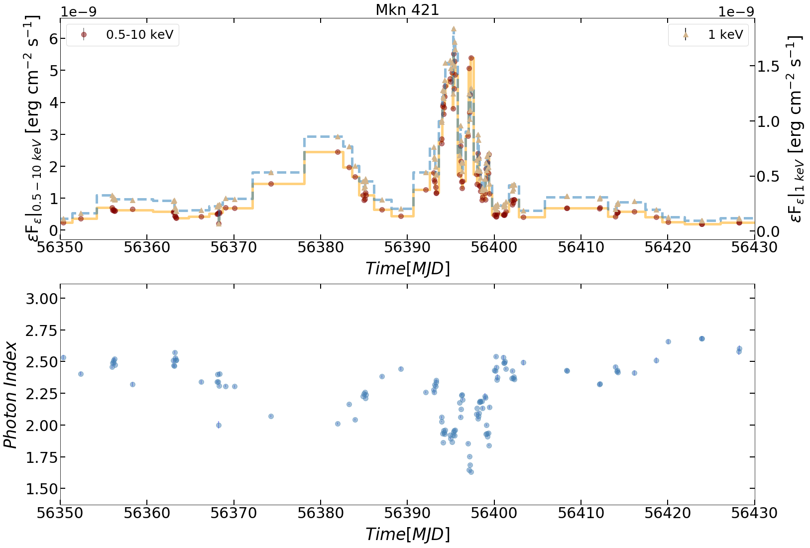
Appendix C معدل الإيجابيات الكاذبة في خوارزمية الكتل البايزية
في هذا القسم، نناقش آثار على تحديد حالات التوهج والتنبؤات بالنيوترينو. يعد اختيار في خوارزمية الكتلة البايزية أمرًا مهمًا، نظرًا لأن احتمال أن تكون نقطة التغيير التي أبلغت عنها الخوارزمية ذات دلالة إحصائية حقيقية. استخدمنا في تحليلنا ، بينما يتم عادةً اعتماد قيمة على الأقل في دراسات تقلب الأشعة (على سبيل المثال Ahnen et al., 2016; Meyer et al., 2019; Garrappa et al., 2019). تحدد قيم الاحتمال الأعلى عتبة أضعف لتحديد الاختلافات ذات الأهمية الإحصائية، مما يؤدي إلى عدد أكبر من الكتل المكتشفة بواسطة خوارزمية الكتلة البايزية. يظهر هذا التأثير في الشكل 15 حيث نرسم عدد الكتل الإجمالية (اللوحة العلوية) والكتل المتوهجة (اللوحة السفلية) كدالة لـ (مقيسة لقيمها لـ ) لجميع المصادر في العينة. نجد أن عدد كتل التوهج ليس حساسًا جدًا لقيمة بالنسبة لمعظم المصادر في العينة (انظر تجميع الخطوط الأفقية تقريبًا حول قيمة واحد). من المؤكد أن هناك مصدرين حيث يكون لاختيار تأثير أقوى على ، كما هو موضح بالنقاط ذات التشتت الكبير. ومع ذلك، يمكن مقارنته بـ و. وبشكل أكثر تحديدًا، فإن مصادر 14 فقط لديها اختلاف في كتل التوهج لهذه القيم المحددة لـ ، مع وجود 12 منها بفارق كتلة واحدة فقط. ومع ذلك، يعتمد عدد الكتل المكتشفة بقوة أكبر على مقارنة بـ حتى بالنسبة لـ . هذه النتيجة مدفوعة بكتل ذات تدفقات أقل من العتبة المعتمدة لتعريف التوهج (أي )، والتي لا تستخدم في تحليلنا. نلاحظ أيضًا أنه ليست كل نقطة من منحنى الضوء تتكون من كتلة حتى بالنسبة لقيم التي تصل إلى 1. على سبيل المثال، تتراوح نسبة بين و بالنسبة للمصادر الموجودة في العينة الخاصة بنا لـ .
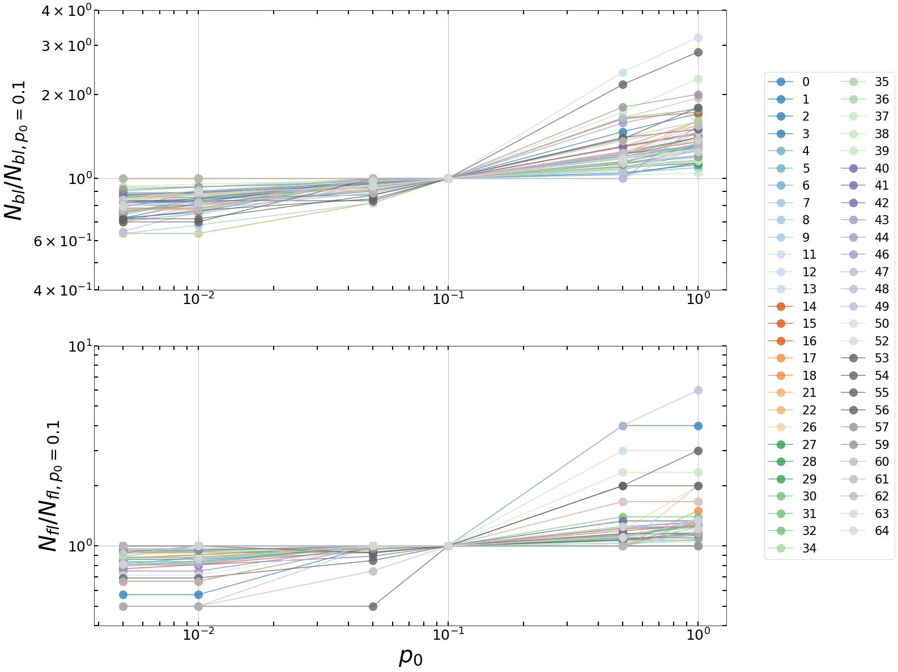
نلقي بعد ذلك نظرة فاحصة على تأثير على عدد التوهجات من النوع A وB وكذلك على العدد المتوقع لنيوترينوات الميونات باستخدام ثلاثة مصادر إرشادية من عينتنا (انظر الشكل 16). يزداد عدد توهجات النوع A، التي تتميز بتدفقات أقل من توهجات النوع B (انظر التعريف في ثانية 3.1)، عند القيم الأعلى لـ (انظر الأشرطة الخضراء في الشكل 16). هذه نتيجة متوقعة نظرًا لأن النوع A يحتوي على المزيد من قياسات التدفق داخل كتلة التدفق مقارنة بتوهجات النوع B، والتي يمكن تفسيرها على أنها اختلافات كبيرة بواسطة الخوارزمية لحد ضعيف بدرجة كافية على . تعتبر القيمة الأعلى لـ أن كل قياس تدفق هو حالة توهج فريدة داخل منحنى الضوء وهذا يزيد بشكل أساسي من عدد التوهجات من النوع A. على العكس من ذلك، تتكون التوهجات من النوع B في كثير من الأحيان من قياس واحد فقط، حيث أنه من غير المرجح أن تستمر حالات التدفق الأعلى لفترة أطول. ونتيجة لذلك، فإن زيادة لا تؤثر بنفس القدر على هذه الكتل (انظر الأشرطة البنية في الشكل 16). يمكن استخدام قيمة أكبر للكائنات الموجودة في العينة والتي لم يتم "أخذ عينات منها بشكل جيد" أو التي تحتوي على قدر كبير من عدم اليقين. في هذا العمل، نحاول أن نبقي تحليلنا بسيطًا قدر الإمكان ونتعامل مع كل منحنى ضوئي بنفس الطريقة. وبالتالي، نختار لجميع المصادر في العينة. من الطبيعي أن تؤثر القيم المختلفة لـ على عدد كتل التدفق وعدد حالات التوهج، ولكن لن يكون لها تأثير قوي على تنبؤات النيوترينو. يوضح الشكل 16 (اللوحة اليمنى) أن القيم المختلفة لـ لها تأثير صفر تقريبًا على العدد الإجمالي المتوقع لنيوترينوات الميون والمضاد الميون (تغيير في حالة TXS 0506+056). ويمكن فهم ذلك على النحو التالي. في اللوحة اليسرى من الشكل 16، أوضحنا أن التغييرات في تؤثر على العدد الإجمالي للكتل، ولكن أقل بكثير من عدد كتل التوهج التي تحتوي على قياس تدفق واحد (توهجات من النوع B). وبعبارة أخرى، فإن الزيادة في ستؤدي إلى تقسيم كتلة ذات قياسات تدفق متعددة إلى كتل ذات مدة أقصر تحتوي على عدد أقل من نقاط البيانات. وبالتالي، فإن المعلومات الأولية حول تأثر كتلة التوهج الأصلية لا يتم فقدانها، ولكنها تنقسم إلى عدد أكبر من كتل التوهج، ولكل منها تأثر أصغر للأشعة السينية. وبالنظر إلى أن عدد النيوترينوات القادمة من المصدر يعتمد بشكل أساسي على تأثير الأشعة السينية للتوهج، فإننا نتوقع وجود اختلافات صغيرة في إشارة النيوترينو الإجمالية لقيم مختلفة من .
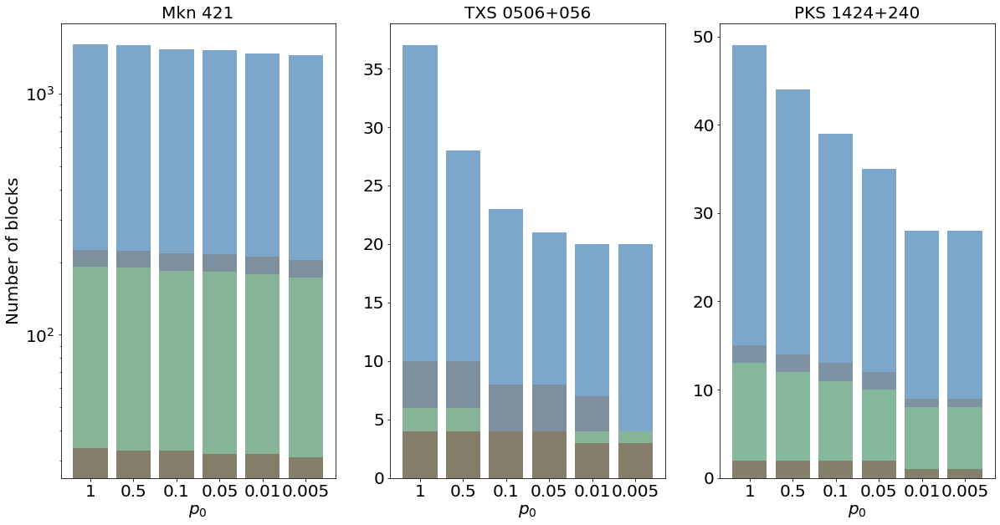
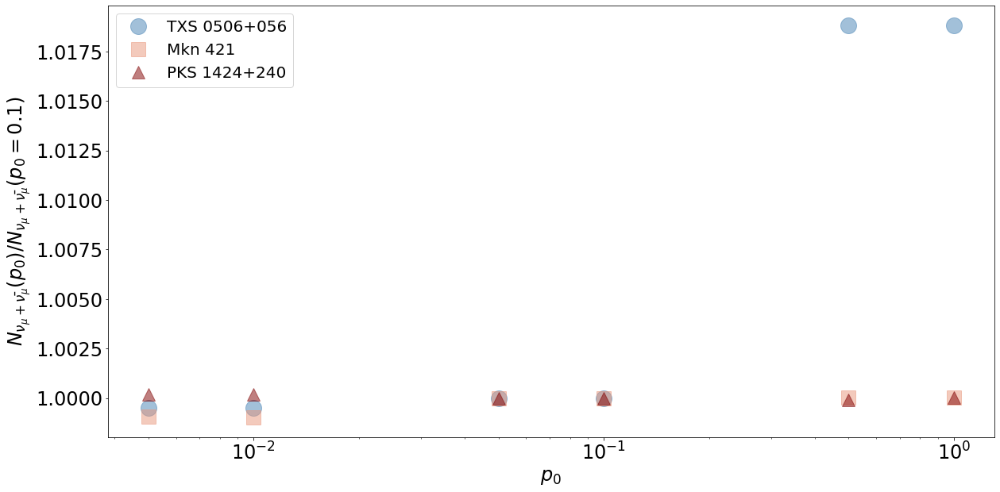